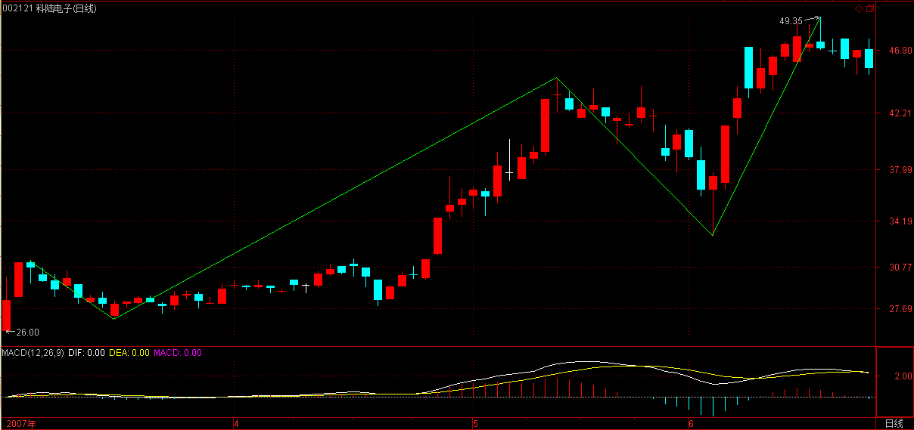
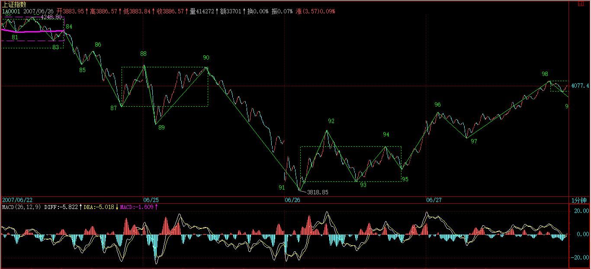

(2007-06-21 08:13:21)
有人经常担心，万一人人都学会本ID的理论，那么本ID的理论还有用吗？
问这种问题的，基本就没搞明白本ID的理论。【韶山映山红】首先，缠论不怕出现人人都学会的现象。缠论是走势完全分类的分析，以实际的走势为依据，不以人的意志为转移，所以无所谓是否人人都学会。】
而且，人人都学会本ID的理论，这本来就是一个假命题，像孔男人这样的文科生，本ID从来都觉得他们能学会的机会比较渺茫。【韶山映山红】其次，不存在人人都学会的现象。也就是说，从另一个角度看，千人千缠也是一种必然，避免不了的。】
注意本ID这里是有定语的，没有打击所有文科生，而是说孔男人这样的文科生。当然，如果有人爱自己往孔男人这样的文科生的套里去，本ID没什么意见。【韶山映山红】文科生也许数学思维不够好，但是有些人逻辑思维清晰，也很好。】
【韶山映山红】 若禅精舍（陈秋明）：其实有耐心把缠中说禅博客里面关于股票内容的文章、历史图形、回复，全部阅读一遍这种基本要求，就有八成的人达不到，边读边思考边笔记的人可以再去掉一多半。这样一来，能够完整的、认真的读完原著的人，大概不到10%。其他的思维方式之类的因素都扔到一遍不谈的情况就是这样，这不是猜测的，而是根据这几年来遇到的形形色色的人估算的。】
有些无聊问题总是被提着，诸如中枢的意义是什么？【韶山映山红】理解中枢的意义，也是为了理解走势的分解，毕竟，没有那么的标准走势。】缠师说的是，不要把注意力放在讲道理，而是要放在反应上。不等于说没有道理。那么，中枢的意义到底是什么？1，定义走势类型。2，定义级别。因为中枢和走势类型是循环定义的，而中枢又是级别之间的纽带，所以，两者是共存的。】
对于一个实际操作者来说，中枢的意义就是没有意义，而没有意义就是最大的意义，因为你只要根据中枢的实际走势去反应，问题的关键是你去看明白走势的分解而不是中枢的意义，更重要的就是根据走势的分解去采取正确的反应。【韶山映山红】“实际操作者”要“看明白走势的分解”，“根据走势的分解去采取正确的反应”。】
如果孔男人之类的文科生想探讨什么中枢意义，那么就让他们探讨去好了，就如同基督教的神甫千百年来YY上帝的意义一样，对于本ID来说，上帝有什么垃圾意义并不重要，关键是如果真有什么上帝，那么也只是被面首的对象。
股票是用来操作的，而不是用来意义的。【韶山映山红】也可以说，走势分解学得不够好，不够正确，都不是什么大不了的事。更重要的，是有一个应对系统，以及执行。如果能够做到采取正确的反应，其他的都可以放低要求。】
【韶山映山红】 若禅精舍（陈秋明）：中枢其实是有意义的，其市场意义就是市场合力在某个级别上，对该只品种特定价格区间的认同，也可以说是多空博弈的平衡区域。关于中枢意义的探讨，其实可以从根本上去解释一切围绕中枢的波动、背驰等概念，但真正愿意并且能够进行深入思考的人还是太少。】
还有些人不断地问，为什么1分钟的顶背驰，有时候跌幅很大，有时候很小，究竟什么时候该走？
这种问题是典型的垃圾问题。【韶山映山红】也可以说，这种问题本来就没有答案。】如果你的操作级别是1分钟级别的，那么1分钟的顶背驰你就该走了，至于后面的跌幅是大是小，和你有什么关系？你只要耐心等待市场走出新的1分钟底背驰就可以。
反之，如果你的操作级别是月线的，那么1分钟的顶背驰和你有什么关系？你既然已经决定是按月线进出的，那么1分钟级别的所有震荡都是可以接受的，可以忽略的。【韶山映山红】有时候，不是可以接受，而是需要忍受。按级别操作获得基本的收益，忍受特殊情况带来的震荡甚至回撤。缠论操作要摆脱价位的影响，关注结构和级别。】
别说1分钟的，就算这次530所谓的大跌，如果你真是月线级别操作的，看都不用看，这种级别的震荡根本就在月线可忍受的范围内，只有那些如孔男人那样的文科生才会认为本ID的理论只能看1分钟的图，本ID已经多次说过，如果你按年线的级别，那么你比巴菲特还要巴菲特，关键是你有没有这样的耐心。【韶山映山红】操作级别越大，越需要鳄鱼般的耐心。】
好了，没必要为孔男人这样的文科生浪费时间，看看下图，一个区间套定位的标准图解。如果上学时学过基本的数学分析课程，应该不难明白区间套定位，如果没学过的，那就费点劲，【韶山映山红】非数学相关专业的，基本上都没有学过数学分析。】虽然前面的课程已经反复说过，但当昨天2007年6月20日13点30前后大盘走势实际地走出来时，能当下看明白的有几个人？因此，以下的分析请仔细研究。
要比较力度，发现背驰，首先要搞清楚是哪两段比较，其实，只要是围绕一中枢的两段走势都可以比较力度。显然，对于60-65这个1分钟中枢，55-60与65开始的一段之间就可以比较。【韶山映山红】 55-60这段走势的5个线段没有重叠形成中枢，是线段类上涨趋势。65-72这段走势的7个线段有重叠，形成了中枢，是1分钟级别的走势。这样不同性质的两段走势可以对比？“只要是围绕一中枢的两段走势都可以比较力度。”】
【韶山映山红】1分钟中枢为什么是60-63-64-65？而不是60-61-62-63？★ 因为这是依照震荡走势的形状划分的？那么，线段划分的必要性是不是就打折扣了？★★以后研究。】
在实际操作中，65开始的走势，由于没实际走出来，所以在和55-60比较时，都可以先假设是进入背驰段。而当走势实际走出来，一旦力度大于前者，那么就可以断定背驰段不成立，也就不会出现背驰。【韶山映山红】疑罪从有原则。没有证明不背驰之前，“都可以先假设是进入背驰段”。】
在没有证据否定背驰之前，就要观察从65开始的一段其内部结构中的背驰情况，这种方法可以逐次下去，这就是区间套的定位方法，这种方法，可以在当下精确地定位走势的转折点。
【韶山映山红】若禅精舍（陈秋明）：
值得注意的是，对于一分钟级别中枢的选取，选了图中60-65这一段，而不是60-69，或者60-67，到69就是五分钟级别中枢，那么55-60作为次级别段好像更加合适，但为什么没有这样选取？
又或者，取60-63为一分钟级别中枢，这样刚好是三个次级别走势段，为什么不这样选？而选择60-65的好处在哪里？
这样的选择其实和五分钟级别K线图有关，首先55-60是abcde结构，60位置顶背驰后理应出现独立中枢A，而这个A在五分钟图上的表现是一个双回抽的图形，在一分钟上，60-65刚好构成aAb结构，其中b段是背驰段，五分钟图上的第二次回抽也是盘整背驰段。
】
对于65开始背驰段的内部走势，当下走到69时，并不构成任何背驰，为什么？因为背驰如果没有创新高，是不存在的。所以，只有等70点出现时，大盘才进入真正的背驰危险区。【韶山映山红】缠师可能没有仔细看，68创新高了。所以这个点就应该出来，等不到后面的涨势了。也许当时的数据不是这样的。★★】
由于69-70段与67-68段比并没有盘整背驰，所以70点并没有走的理由，除非你是按线段以下级别操作的。【韶山映山红】先比较最近的线段类盘整背驰。】
而71点，构成对66-69这1分钟中枢的第三类买点。
按照本ID的理论，其后无非只有两种情况，中枢级别扩展或者走出新的中枢上移。对后者，一个最基本的要求就是，从71点这第三类买点开始的向上段不能出现盘整背驰，【韶山映山红】71-72必须是非背驰上涨，对69-70不能有线段类盘整背驰，否则就会有72-73跌破70形成中枢70-71-72-73，与中枢66-67-68-69扩张升级。】而在实际中，不难发现，71点开始的走势力度明显比不上69-70段，而对于65-66段，69开始的走势力度也明显比不上，【韶山映山红】中枢66-67-68-69的进入段65-66和离开段69-70-71-72盘整顶背驰。】这从两者下面对应的MACD红柱子面积之和可以辅助判断。【韶山映山红】线段类盘整背驰和线段中枢类盘整背驰都参考MACD柱子面积之和。】
【韶山映山红】若禅精舍（陈秋明）：
背驰如果没有创新高，是不存在的，也就是背驰必须创新高或者创新低。但在原博客的其他地方又有这样的表述：背驰与否取决于力度减弱与否，连新高都创不了，力度当然更小。抛开主观的人为理论定义，决定上下型走势结束与否的标志性条件，就是力度的衰减，这种衰减分为两种情况，一种是创了新高的，另一种是不能创新高的，在客观存在的走势中，不创新高就结束的情况很多，就像这种盘整，直接从盘整的一个非新高次级别顶点结束简直太正常了。实际操作中如果非要去等新高，很多时候会死的很惨，类似于前面的14位置，只比中枢高点10位置高一点点，和这图中的68差不多。】
因此，65开始的走势是第一重背驰段，【韶山映山红】65-72对55-60，中枢60-65前后。】69开始的是第二重背驰段，也就是65开始背驰段的背驰段，【韶山映山红】69-72对65-66，中枢66-69前后。】而71开始的是第三重背驰段，也就是65开始背驰段的背驰段的背驰段，【韶山映山红】71-72对69-70，线段类盘整背驰。】
最后当下考察71开始的走势，从走势上红尖头以及MACD上红尖头可以当下知道，71的内部背驰也出现，也就是第四重的背驰段出现了。
由此可见，72点这个背驰点的精确定位，是由65开始背驰段的背驰段的背驰段的背驰段构成的，这就构成一个区间套的精确定位，这一切，都可以当下地进行。
【韶山映山红】若禅精舍（陈秋明）：
实际临盘时，是要配合五分钟走势图来进行分析的，五分钟图上的走势仍然在向上延续，就不太需要太过于关心一分钟图上的细节问题。这里的内容更主要的是在根据当时的盘面走势，来说明什么是区间套，关于这个问题，原文已经很清楚了，对照图形和文字都可以理解。】
对于实际的操作，72四重背驰点出现后，卖是唯一的选择，而区别只在于卖多少。
当然，如果是按5分钟级别以及以下级别操作的，当然就全卖了，因为后面至少会形成5分钟的中枢震荡，实际上，60-69就是一个5分钟中枢。【韶山映山红】60-63中枢延伸9段升级。69-72离开段盘整背驰。】

而对于大级别操作的，显然不可能因一个5分钟震荡而清仓，所以可以根据5分钟震荡可以容纳的数量进行对冲操作。【韶山映山红】69开始到收盘，只是5分钟中枢60-69的次级别的震荡，69-72离开，72-74返回。这里的真正问题是返回的力度太大，跌破了更前面的中枢46-55，这时候，即使是大级别操作，也不能无视了。至少这两个5分钟中枢会扩张升级到30分钟。不排除趋势结束开始反趋势的可能。大级别的要开始考察二卖了。】
小资金的利润率，在相同操作水平下，显然要远高于大资金的，例如像这样的卖点，小资金就可以全仓操作，大资金是不可能的。
【韶山映山红】若禅精舍（陈秋明）：
60-69就是一个5分钟中枢，相同的走势，不同的分析侧重点，可以选择不同的分解，这在第33节《走势的多义性》中就有过阐述。例如上面这图，按一分钟级别同级别分解，和按五分钟级别走势类型分解，对走势的拆分可以完全不同，但都不影响实际分析，甚至有时候还可以根据不同分解得出的不同结果，来将一些后续分类进行排除，而使后续走势分类原来是五个，排除后只有两个甚至只有唯一一种可能，这就是多义性的最大意义。】
如果说72的判断有点难度，需要知道区间套的精确定位，那么74的第二类卖点，就一点难度都没有了。【韶山映山红】74是线段级别的二卖。1分钟操作级别的。】
唯一有点需要分辨的就是，这第二类卖点，同时又是一个1分钟中枢的第三类卖点，【韶山映山红】第二类卖点，同时又是第三类卖点，这是原文的一个二三卖重合的实例。不是走势类型分析的二三卖重合，只是属于多义性分析的重合。】究竟哪个中枢？显然不是70-73这个，因为这里需要满足结合律。【韶山映山红】前面是上涨走势，走势类型中枢是下上下的结构，70-73就是这样的结构。但74只是离开，不是离开+返回，不满足第三类买卖点的结合律要求，所以不构成第三类买卖点。这种结构很常见，被很多人误读。】一个第三类买卖点，至少需要有5段次级别的，前三段构成中枢，第四段离开中枢，第5段构成第三类买卖点。【韶山映山红】这就是第三类买卖点的结合律。换句话说，任意连续的5段次级别走势都可以这样去分析。那个井论也可以算是这种思路的分支，研究5段组合的分类。★那么，5段组合的分类都有哪些？可以做个专题，以后研究。★】其实，这里的答案很简单，74点是69-72这个中枢的第三类卖点。【韶山映山红】72之前一直是连续向上的走势，为什么要分析这样一个上下上的回升中枢呢？★对5分钟中枢60-69来说，69-72是1分钟离开段，没有5分钟中枢的三买，所以72的转折是小转大，最后一个中枢就是69-72。“小背驰-大转折定理：小级别顶背驰引发大级别向下的必要条件是该级别走势的最后一个次级别中枢出现第三类卖点；”所以这个中枢的三卖就是小转大必要条件的标志性三卖。74前面那个反弹高点是笔级别的小转大的那个三卖。】
【韶山映山红】重点是，74的三卖，不是一般的三卖。5分钟中枢60-69的离开段69-72对进入段55-60有中枢盘整背驰。69-72内部，71-72对69-70线段盘整背驰。71-72内部盘整背驰。三重盘整背驰带来72的小转大。小转大立场的标志就是74这个线段级三卖。72-73内部还有更低级别的三卖。】
【韶山映山红】盘整背驰的转折，本质上就是小转大。72的走势是5分钟趋势（a+A+b+B+c+C+d ）。d没有三买，那四重区间套背驰分析，哪个都不足以引起这么大的下跌，最终把荣誉白给了最小级别的1分钟笔的背驰，72之后的三波下跌低点，其实就是对于背驰区间套的小转大区间套，到75的时候就完全确认小转大一直转到了5分钟的级别。网上有篇文章《区间套的死亡陷阱》，这个陷阱就是小转大。因为小转大不能当下做出判断，所以成了要命的陷阱。】
【韶山映山红】72的走势是5分钟趋势（a+A+b+B+c+C+d ）。d小转大，最终走成a+A+b+B+c+C+d+D。D和C、B都有重叠，扩张升级成30分钟中枢，走势类型分析的划分是（a+A+b）+（B+c+C+d+D），同级别分解的划分是（a+A+b+B+c+C+d）+（D）。】
也就是说，74点既是一个第二类卖点，又是一个第三类卖点，以前的课程已经说过，一旦出现二、三类买卖点同时出现的情况，往往后面的力度值得关注。实际上，74后面出现更大力度的下跌，这并没有任何奇怪的地方。【韶山映山红】在20课提出二三买重合的问题、21课解释什么是二三买重合之后，这里是第三次述说这个问题：“二、三类买卖点同时出现”。二三买重合之后的走势力度值得关注。】
【韶山映山红】《教你炒股票21：缠中说禅买卖点分析的完备性》：“只有第二类买点与第三类买点是可能产生重合的，这种情况就是：但第一类买点出现后，一个次级别的走势凌厉地直接上破前面下跌的最后一个中枢，然后在其上产生一个次级别的回抽不触及该中枢，这时候，就会出现第二类买点与第三类买点重合的情况，也只有这种情况才会出现两者的重合。当然，在理论上没有任何必然的理由确定第二、三类买点重合后一定不会只构成一个更大级别的中枢扩张，但实际上，一旦出现这种情况，一个大级别的上涨往往就会出现。”】
【韶山映山红】21课所说的实例看不到小级别的结构，这里的实例就很清楚了：前面走势的最后一个中枢并不是前走势的最后一个中枢，而是该中枢的背驰段，而且是a+A+b盘整背驰的背驰段。】
【韶山映山红】从图形上看，可以是68-71这个中枢的三卖点，这才符合一般的理解。】
【韶山映山红】缠师偏偏不采用，反而去说69-72。】
【韶山映山红】也就是说，哪一种二三买重合才是正宗的？★应该说，都是，只是级别不同。】
对于60-69这个5分钟中枢，69的4244点是一个关键位置，如果在其下出现第三类卖点，那么走势至少将扩展成一个30分钟中枢，调整的幅度与压力就大了。【韶山映山红】69的4244点是5分钟中枢60-69的ZD。如果在其下出现5分钟级别的第三类卖点，60-69这个5分钟中枢就不再延伸，只能扩张升级或形成下跌趋势。】
而对于72开始的走势，73很重要，要重新走强，必须冲破73这一点，该点位置恰好也是4244点。【韶山映山红】背驰点之后的回跌段72-73回到了前面走势的最后一个中枢的区间范围，前面趋势在背驰点72结束，一个新的走势类型开始，所以后面的走势如果不上破73，当然不是“重新走强”。另外，74-75对72-73没有盘整背驰，73是72下跌的第一个下跌中继的反弹位置。】
【韶山映山红】72-73内部是类中枢震荡盘整背驰，73-74如期反弹回微型类中枢。73-74内部线段类盘整背驰然后下跌，跌破73后跳水，这个内部盘整背驰在标准的MACD图上看不出来，参数减半就很明显。跳水的底部75小转大反弹了一下，然后继续下跌，这个小转大在标准MACD图上可辨。】
因此，短线的4244点十分关键，重新站稳，则大盘将最多是5分钟中枢的延伸震荡，否则即使不演化成5分钟级别的下跌，也将扩展成30分钟级别的中枢震荡。【韶山映山红】69的4244点是5分钟中枢60-69的ZD。69-72是1分钟离开，72-75是1分钟返回击穿再离开，如果后面又回到5分钟中枢ZD，就还算5分钟中枢的延伸。虽然跌破了更前面的中枢，也没有关系。★】

【韶山映山红】若禅精舍（陈秋明）：
五分钟中枢，以三个一分钟级别走势类型的震荡高低点区间重叠而成，这应该是基础了。那么这个60-69五分钟级别中枢，其中枢区间高点就是60位置，低点就是69位置。而如果从72开始的一分钟下跌完成后，再一个一分钟级别上涨不能回到69位置，将构成该五分钟级别的第三买点，后续两种分类：一分钟级别背驰式下跌或者非背驰式下跌，前者将制造五分钟级别的向下走势属于最弱的情况，后者将制造60-69五分钟级别中枢的扩展，使60开始的五分钟中枢，经过扩展后成为30分钟级别中枢。
73位置的技术意义就是，如果不能冲破，则意味着72开始的一分钟级别下跌在继续生长，延续为下跌趋势或者其他走势类型都有可能，而一旦升破，意味着走势对向下脱离五分钟中枢的意愿并不强烈，那么走势将围绕这该五分钟级别中枢进行次级震荡。】
不管学什么，是否愿意学，首先请先把学的东西搞明白，否则浪费的是自己的时间，还不如不学。
本ID的理论，你爱学不学，就像无论你是否相信万有引力，无论你是上帝还是小布什，该存在的依然存在。本ID的理论亦如此，无论任何人学与否，无论你是庄家、管理层还是什么玩意，都不增一分、不减一分，都一样。
因此，千万别学孔男人而成为如孔男人那样的文科生，究竟孔男人那样的文科生是一种什么玩意，看看下面两个连接就明白了。
附录：
【韶山映山红】2007-6-21 15:25】
如果在看过上面的课程，今天的走势都看不明白不会操作，那你大概要面临两种选择：一、去和孔男人为伍；二、洗心革面、好好学习。

上面说到的4244点的技术意义，在今天走势中表露无疑，【韶山映山红】69的4244点是5分钟中枢60-69的ZD。“短线的4244点十分关键，重新站稳，则大盘将最多是5分钟中枢的延伸震荡，否则即使不演化成5分钟级别的下跌，也将扩展成30分钟级别的中枢震荡。”】
早上的杀跌补缺口，【韶山映山红】6月20日的74a低点的小转大带来反弹到74b，然后小转大又下跌到75，尾盘在75又小级别背驰。6月21日的开盘跳空低开，因为前一日收盘已经有小级别背驰要向上了，所以这个跳空低开是“杀跌”，然后走势向上“补缺口”。】这次是一个明显的区间套底背驰定位，【韶山映山红】72开始的下跌，74-75对72-73没有盘整背驰，76-77对74-75线段类盘整背驰。76-77内部中枢震荡盘整背驰。】如果还看不明白，继续加倍努力学习或者放弃孔男人去，自己选择吧。【韶山映山红】77是区间套底背驰定位，不等于她是走势的转折点。线段级背驰带来的首先是中枢的形成。】
【韶山映山红】这里的74-74a不足以成段，所以又搞出来75的次低点成段了。】

明天还是这个4244点，站稳就走强，否则继续5分钟的中枢震荡，并且要小心出现第三类卖点。【韶山映山红】69的4244点是5分钟中枢60-69的ZD。按照5分钟走势去划分60开始的线段震荡，这时候依然在“5分钟的中枢震荡”边缘。】
明天又是周末，利空又准备漫天飞，本ID早在前面说过，这里必须用震荡来化解技术、心理、政策的压力，如果整天还是周一看没消息就跳空，然后继续不断震荡等周五，然后周末等消息，这样轮回下去，是走不出坚定有力的行情的，所以关键还是心态，整个市场的心态必须在震荡中修复。
今天最低4147点，和本ID反复说的1/2线4144点相差不远，中线关键还是看这线，不破就是强势。【韶山映山红】日线二卖了。】
个股方面，本ID那16只股票的剧本一大早就告诉大家了，本ID说的是16只，已经有8只创新高，今天还3只涨停的。为什么不16只一起来，首先这操作不过来，其次，这样是资金利用率最高的，如果你按照这节奏去轮动操作，对于小资金，你这次反弹的收益率如果少于100%，那你的毛病就大了。
为什么要看买卖点，为什么要强调节奏，最终都是为了资金的安全与利用率，这对大资金同样的，而对小资金，掌握了节奏，你的效率更高。
注意，本ID的意思不是你一定要买本ID这16只股票，只是事先告诉并直播本ID的操作节奏，让大家去把握其中资金运用的道理。要有效率，必须有节奏，要有节奏，就首先要把握好买卖点，这里的逻辑关系，请好好思考明白。
今天下午有一个聚会，谈谈心、统一一下思想，必须下了，明早见。
今天解盘下午3点后附录本帖。
先下，再见。
2007-6-21 08:14
如果在看过上面的课程，今天的走势都看不明白不会操作，那你大概要面临两种选择：一、去和孔男人为伍；二、洗心革面、好好学习。上面说到的4244点的技术意义，在今天走势中表露无疑，早上的杀跌补缺口，这次是一个明显的区间套底背驰定位，如果还看不明白，继续加倍努力学习或者放弃孔男人去，自己选择吧。
明天还是这个4244点，站稳就走强，否则继续5分钟的中枢震荡，并且要小心出现第三类卖点。明天又是周末，利空又准备漫天飞，本ID早在前面说过，这里必须用震荡来化解技术、心理、政策的压力，如果整天还是周一看没消息就跳空，然后继续不断震荡等周五，然后周末等消息，这样轮回下去，是走不出坚定有力的行情的，所以关键还是心态，整个市场的心态必须在震荡中修复。今天最低4147点，和本ID反复说的1/2线4144点相差不远，中线关键还是看这线，不破就是强势。
个股方面，本ID那16只股票的剧本一大早就告诉大家了，本ID说的是16只，已经有8只创新高，今天还3只涨停的。为什么不16只一起来，首先这操作不过来，其次，这样是资金利用率最高的，如果你按照这节奏去轮动操作，对于小资金，你这次反弹的收益率如果少于100%，那你的毛病就大了。为什么要看买卖点，为什么要强调节奏，最终都是为了资金的安全与利用率，这对大资金同样的，而对小资金，掌握了节奏，你的效率更高。
注意，本ID的意思不是你一定要买本ID这16只股票，只是事先告诉并直播本ID的操作节奏，让大家去把握其中资金运用的道理。要有效率，必须有节奏，要有节奏，就首先要把握好买卖点，这里的逻辑关系，请好好思考明白。
今天下午有一个聚会，谈谈心、统一一下思想，必须下了，明早见。
2007-6-21 15:25
【网文】区间套的死亡陷阱
(2014-07-14 19:30:11)
缠论中，区间套是精确定位买卖点的良好工具，是运用缠论的必备手段。然而实践下来的结果往往伤痕累累。为什么呢？
下面以一个30F级别的盘整背驰作为例子进行分析：
当前30F盘整背驰，而且以下级别都出现了符合区间套的盘整背驰。符合如下条件：
30F级别：{ [a（30） ,b（30）]}；
次级别5F符合：{ [a（5） ,b（5）]}是{ [a（30） ,b（30）]}的子集；
次次级别1F符合：{ [a（1） ,b（1 ）]}，是{ [a（5） ,b（5）]}的子集；
此时：
三级别联立有如下方程组：括号表示：【最小解，最大解】的区间；最小解为必然的解，表示次级别的回抽；最大解为可能解，从理论上来说，最大解也是必然解，不过不一定是当下的该盘整背驰点，也可能是第二个第三个，也可能是趋势结束点。但是新的同级别走势类型必然会出现；最小解包含于最大解中。
30F盘整背驰的解：【次级别5F回抽，30F走势类型】
5 F盘整背驰的解：【次级别1F回抽，5F走势类型】
1 F盘整背驰的解：【次级别线段回抽，1F走势类型】
线段盘整背驰的解：【次级别笔回抽，新线段】
从实际操作和理论出发，我们选择最小解联立，得到方程组：
30F盘整背驰的最小解：次级别5F回抽；
5 F盘整背驰的最小解：次级别1F回抽；
1 F盘整背驰的最小解：次级别线段回抽；
线段盘整背驰的最小解：次级别笔回抽；
由于盘整背驰只能保证次级别的回抽，那么运用区间套来操作这个五分钟级别的回抽是绝对唯一的吗？我们都知道，大级别的图上，最终都是从小级别上形成的。那么立于一个完全符合区间套的点ξ处，我们是否可以完全推演出这个点必然产生五分钟级别的后抽呢？
五分钟级别的回抽，必然至少有三段有重叠部分存在的一分钟级别走势构成。那么我们运用反证法：当下情况可能：一分钟级别的盘整背驰之后，向下一份1F盘整背驰，之后1F新高，这个点ξ就被破坏了。由此可见，转折的点ξ是唯一的一个，但不是所有符合区间套的点都是这个转折点。
如图：你就发现符合区间套的点有两个，最后一个才成为了这个五分钟回抽的转折点，那如果是小转大呢，很多人的分析就乱了套了，同时我们也可以看到，分析的级别越大，其次级别的层次越多，这种复杂性就越多。一个日线级别的背驰，如果符合区间套的三十分钟级别点有三个，五分钟级别有三个，一分钟级别有三个，线段级别有三个，笔级别也来三个，那基本上算是玩完了。
或许，这也就是缠所说，股票市场操作不好，期货市场几乎就是去送菜的原因。之所以分析那么深，就是看到很多学缠人像想把技术移植到期货市场上大显身手。看了上面的分析，有没有一种心底发凉的感觉呢？
区间套的结论出来了，就是：某级别中，符合区间套原则的点不一定都是该级别的转折点，也不一定是次级别的转折点！如果说符合区间套的点集合是A，你会发现这个集合A的元素并不一定唯一！而且，在完全符合区间的情况下，这个ξ才是A的元素，如果其下某级别中出现了小转大的情况，那么这个ξ就不在符合区间套集合A的元素中！也就无从定位了！
这样的结论未免让人很惊讶!但是推演出来的结果却恰恰如此！
这就解释了你抄底为什么总是抄在山岗上，摸顶总是摸在山谷里的原因！
买了还跌，卖了还涨！区间套套死你！
那为什么出现这样的情况呢？
原因是理论匹配上了问题：因为走势要出现同级别的反向走势，必然的只有一种情况：完全都是标准趋势背驰！从30F,5F,1F,线段到笔都是标准趋势背驰。那么用区间套才能完美的定位这个点ξ！
根本原因在于：盘整背驰不能保证转折！
如果按照严格的区间套求点ξ，必然是这样的条件！
30F标准趋势背驰：解：本级别回抽；
5 F标准趋势背驰：解：本级别回抽；
1 F标准趋势背驰：解：本级别回抽；
这样的条件才严格符合数学上的区间套定义！
然而其解又是唯一的吗？
显然ξ是区间套解集A的元素，但A也不一定是只有唯一的解！
为什么呢？在当下，我们不知道他是这样标准的趋势走势类型，本级别中也可能出现盘整背驰，例如三十分钟级别的中枢中，这样的地方就可能存在符合区间套解集A的元素！
那么有没有化解的方法呢？很明显，这样的操作是和级别有关的，就完全从理论上来讲，使用第二三卖买点，就能很大规避这个问题，因为第二三卖买点是从形态学上来定义的。或许也就在冥冥中验证了那句话：不抄底，不摸顶！
区间套成了你的死亡陷阱，这下彻底慌了！怎么办？你发现你迷信缠论了吗？你发现你把缠论当成一种永动机了吗？你发现你在企图把缠论作为解释市场由“面”到“里”的工具了吗？你正确认识过缠论吗？因为你贪瞋痴了！一个完美的理论并不能导致一场完美的实践！这也就解释为什么学缠用缠是一种修行，而不是一种机械式的活动！
(2007-06-22 08:30:44)
由于今天收盘后要去出差，第一站湖南，然后还要跑几个省，所以就不想写新东西了。
最近这里很热闹，好象有10万的日成交天量出现过，有点不大正常，新人太多，大概也需要风险教育一把了。
“股市里不动脑子只有死路一条”这题目，适合一切风险市场，而不光是股市，例如人生就是一个大的风险市场。
可是这世界尽是些不动脑子的人，这些人的心态就是，企图找一个所谓的先知、上帝，然后借着他力就飞上天去了。【韶山映山红】现在混迹于缠论世界的大部分还是这一类人。】
所以，在股票市场中，那些所谓的股评、黑马推荐到处泛滥，养活这些人的都是这些不动脑子的人。
但这世界上，从来没有任何一个搞股评、黑马推荐能成为市场的真正成功者，更不用说那些听股评、黑马推荐而不动脑子的一群。
任何东西，都要经过自己的大脑，就算是本ID的理论，你也必须经过自己的大脑，用自己的脑子去判断。
如果某些人的水平还暂时太孔男人，那完全可以对本ID的理论敬而远之，当然不敬而远之也可以，甚至破口大骂都可以，例如可以很孔男人地说“我炒股到你这个水平的时候，你全家都没出生呢？你也敢跟我谈股票？无耻！”。
本ID理论的正确，又不在乎有多少人相信，就像即使没有人相信费马大定理是对的，但该定理依然是对的，关于该定理的证明，没几个人能看懂，但对就是对，没任何改变。【韶山映山红】费马大定理：当n>2时，不定方程 x^n+y^n=z^n 没有正整数解。】
学任何东西，都必须究底穷源，如果你还有疑惑，怎么可能操作起来得心应手？特别像本ID的理论，实战性如此强，不透彻理解，怎么可能与走势本身过招？
当然，没有任何人有义务去学本ID的理论，甚至本ID一直都建议，如果你对本ID的理论在理解上还有疑问，就别用本ID的理论去操作，特别不能进行级别太小的操作。
当然，本ID的理论有很多方面，如果你彻底明白其中一方面，例如同级别分解，那也可以按此操作，前提是你真明白了。
本ID这里不是股评，也没有黑马。本ID在这里说的股票，都是本ID自己实际操作的股票，而且本ID说的时候，基本就是同时在买的时候，那种自己先买后说的活动，本ID才没兴趣干。为什么？因为只要精通本ID的理论，任何股票在任何价位买，其实都不是问题，通过震荡，通过不断差价，本ID总能把他们的成本变成0，只是时间长短的问题。
现在本ID做盘已经很温和了，N年前，本ID的风格可不是这样的。例如，有一只东北的股票，当时本ID抢筹码，从9元开始，一直抢到26元，然后展开大幅震荡，N家人在里面打架，成本也大幅度减少，最后拍上38元飞流直下三千尺，前后不过N月。这只是本ID干过的一件小事，那次，基本没散户什么事，谁告诉你股票一定要有散户才好玩的？
去年底开始来这里的人都知道，本ID在这里说股票，第一只就是000999，当时是12月20日前后，价格在6元，本ID也就是同时进去的，后面000416在3元，600635在5元，600777在4元等等，本ID说的时候，也就是本ID开始买的时候。所以，本ID持有股票的时机、成本是完全公开的，但成本只是当时的，现在这些股票的成本都是0。
至于16只股票外3、4月以后说的股票，一只是600607，当时说是抽点汉奸血，当时是13元，后来翻倍后砸出部分让成本变0，这在当天也顺口提醒过了；
【韶山映山红】600607上实医药，2010年2月3日被上海医药601607吸收合并。】
000338，写诗那天是5月15日，本ID是写完诗后第二天开始进去的，看图形就知道；
【韶山映山红】000338潍柴动力。】
600139，这股票说的第二天一大早，专门上来说这股票盘子太小，不能乱买，本ID当然也没乱买，可以看看当时本ID说的话，请问够清楚没有？
【韶山映山红】600139绵阳高新，2007-04-11变更为*ST绵高，2009-06-04变更为西部资源。问答里所说的“等比数列”就是她。】
2007-05-22 08:49:55
各位请注意，本ID昨天说的股票只是举例子，由于有些盘子太小，例如本ID就在摆弄着一只和那锌锗内容一样的股票，但盘子确实太小，根本就没法说，一说就乱。现在不是2000点了，任何股票都要首先注意风险，必须按照大级别的买点进入。盘子小的，不能乱买，否则盘子就乱，就要洗。各位最好就是按思路去买股票，最好就是继续持有原来已经获利丰厚而依然有大潜力的股票，这样可以减少震荡的风险，否则一窝蜂地去换股票，那就乱套了。
还有一只是600569，也是5月21日说的，22日就停牌，本ID也都是21、22两天买的，不过这股票有点背，本来要大涨的结果停牌碰上530大跌，所以本ID在复牌6月13日那天明确说：“今天，那关住的钢铁出来，这股票，这里很多人是停牌前一天9元多点买的，至少让各位少了被震的痛苦，逃过一次大跌，如果今天早上反应快的，还能有10%以上的收益。本来，如果没这次大跌，这股票肯定是要连续涨停的，现在只能先清洗一下，让需要用钱的先出来，这也是市场操作中经常要面对的事情，剧本，偶尔也要修改一下的。至于后面的走势，看好技术图形就不难发现了。”
【韶山映山红】600569安阳钢铁。问答里所说的“甲骨文”就是她。】
如果你在6月13日后还追高买入而不是等待买点再说，那本ID严重怀疑你是孔男人的嫡传弟子。至于本ID自己，去看看60分钟图，这么大一个顶背驰，本ID会麻木不仁吗？对于有大卖点的股票，最大的仁慈就是砸死他，先卖后买，注意节奏，这样成本才能降低，否则成本怎么去变成0？
【韶山映山红】600569安阳钢铁。60分钟图上笔中枢划分。】
【韶山映山红】600569安阳钢铁。1分钟笔线段初始化的递归5分钟走势。】
【韶山映山红】600569安阳钢铁。60分钟图上，按照1分钟笔线段初始化递归走势的重新划分。】
至于600636，本ID也正在慢慢建仓中。
【韶山映山红】600636三爱富。】
当然，本ID还有几只股票没说过的，600839、000021、000001，这都是本ID在96年那次大牛市中大抽其钱血的股票，买他们纯粹是怀旧，而且参与程度有限，都是元旦前后买的，现在也都成本为0了。
【韶山映山红】600839四川长虹。】
【韶山映山红】000021深科技。】
【韶山映山红】000001深发展A。2006-08-02变更为平安银行。】
002121、002123，这是本ID曾多次说的中小板里6000万总盘，2000以下流通的股票，还有一个002114，都是上市就买，盘子太小，买不了多少，也花不了什么钱，这些依然没完全成本为0，但也快了。
【韶山映山红】002121科陆电子。】

【韶山映山红】002123梦网集团。】
【韶山映山红】002114罗平锌电。】
由于很多新来的，都不知道这么多典故，例如还发纸条问“緾姐好！经常前来学习，在你的文章中总提到16只股票，能否告知？昐！”所以就把本ID最早那16只股票列出来，括弧里是说时的价位，也就是本ID自己最开始买时的价位，方便起见，都四舍五入，取整数了。
注意，本ID又不是庄家，虽然比庄家还残暴，但根本不需要任何人抬轿子，本ID现在吸的是庄家血，现在的庄家，都是本ID的晚辈了。所以没有的，最好就是观赏，千万别追高买，技术不好的，就更应该这样。当然，如果低位一直拿着的，当然可以继续玩下去，把这些股票面首玩到精尽人亡为止。但最终，都要自己找吃去，这才不枉来学本ID的理论一场。
000999（6）、
【韶山映山红】000999三九医药，2010.02.24变更为华润三九。】
000600（5）、
【韶山映山红】000600建投能源。】
000777（8）、
【韶山映山红】000777中核科技。】
600777（4）、
【韶山映山红】600777新潮实业。2016-07-06变更为新潮能源。】
000778（5）、
【韶山映山红】000778新兴铸管。】
000416（3）、
【韶山映山红】000416健特生物，生产脑白金。2008-01-06变更为华馨实业，2008-12-30变更为民生投资，2014-04-14变更为民生控股。】
000915（3）、
【韶山映山红】000915山大华特。】

000099（4）、
【韶山映山红】000099中信海直。】
600635（5）、
【韶山映山红】600635大众公用。】
600649（6）、
【韶山映山红】600649原水股份，2008-05-12变更为城投控股。】

600578（5）、
【韶山映山红】600578京能热电，2013-10-10变更为京能电力。】
600343（11）、
【韶山映山红】600343航天动力。】
000938（10）、
【韶山映山红】000998隆平高科。】

600432（19）、
【韶山映山红】600432吉恩镍业。】
000998（9）、
【韶山映山红】000938紫光股份。】
000802（10）
【韶山映山红】000802北京旅游，2014.10.24变更为北京文化。】
出差，主帖就不写了，但每天解盘还是可以继续的，大概下周末能回北京，本周的音乐会就自由活动吧。
附录
【韶山映山红】2007-6-22 15:47】
由于要出差，先把这线段图贴出来，否则回来就积累一大堆K线，要分很多张图了。
昨天说的很清楚了：“明天还是这个4244点，站稳就走强，否则继续5分钟的中枢震荡，并且要小心出现第三类卖点。”今天的走势在4244点上精确地被再次压制，然后出现大幅度跳水，这些在今天走势的当下都很容易分析。【韶山映山红】69的4244点是5分钟中枢60-69的ZD。6月22日的80、82两次上攻ZD都无功而返，81-82对79-80还盘整背驰了，于是走势扭头一路下行，使得75-84的5分钟中枢长出很难看的样子。注意这里的84不是5分钟中枢的三卖，画线看上去是78-81离开、81-84返回不进，但81-84段的高点是82，在5分钟中枢60-69的ZD之上。分解出5分钟的75-84中枢之后，78是72之后的二卖，实盘的时候，72-77是离开，82才是1分钟级别反弹不新高的二卖。】

81-82的盘整背驰、【韶山映山红】81-82对79-80线段类盘整背驰。】84点的第二类卖点，【韶山映山红】79开始的最后一轮上攻，82新高盘背，84是线段级的二卖。】后面走出一个线段的标准下跌，【韶山映山红】82--87线段类下跌趋势。】
【韶山映山红】这一小段说的是78-87的向下，79-82是回升中枢，81-82线段类盘整背驰，84不新高，二卖。如果84低于81就是中枢79-82的三卖了。】
【韶山映山红】81-82对79-80线段类盘整背驰，然后下跌。83快跌，但是82-83内部的微型中枢离开段盘整背驰，84反弹回微型中枢，形成线段级二卖84。83-84内部线段类盘整背驰，继续下跌。84-85内部线段类盘整背驰。85-86内部线段类盘整背驰，下跌、平台、暴跌。】
以红箭头所指微型中枢前后出现背驰，然后有87的转折，但这个转折，由于86-87没有背驰，所以，只能是线段下级别的，因此，并不能现在就确定该线段就走完了，除非重新突破85的4131一点。【韶山映山红】87的转折是86-87内部中枢离开段盘整背驰，86-87对84-85没有线段类盘整背驰，所以87反弹不会回到85的高度，只回到红箭头所指微型中枢的高度。87之后的反弹如果“重新突破85”，就证明87的小级别背驰转大级别转折了，这时候才能确定下跌结束，否则还是线段类下跌趋势。】
【韶山映山红】缠师为什么要写这一段文字？★87转折之后，已经出现了三折，按照这时候的线段规则，已经形成了87-88线段，同时86-87线段也已经完成了。但是88没有回到85，按照前面的规则，不当做小转大看待。缠师写这一段，就是针对这种情况，提出新的规则。在后期的线段课程中，把这样的小转大，用第二种情况处理了。】
站在中枢的角度，75-84这个5分钟中枢下边在4188点，【韶山映山红】ZD83的4188点。】如果后面的走势不能重新站上去，就要提防形成5分钟第三卖点。【韶山映山红】75-84这个5分钟中枢的三卖。“站在中枢的角度”，意思是说，不是站在走势类型分析的角度。75-84这个5分钟中枢实际上是60-69那个5分钟中枢的延伸。换句话说，站在中枢分析的角度，72是中枢延伸过程中的一个高点，属于中枢震荡。站在走势类型分析的角度，72是5分钟上涨趋势的终点，72盘整背驰结束了上涨趋势。也就是说，这里出现了一个中枢分给了两个走势的情况。2017年2月23日上证指数的顶点3264的情况，就和这个72点类似。】
而前面已经说过，现在的情况46-87已经构成一个30分钟的中枢，【韶山映山红】19开始的上涨趋势的后两个5分钟中枢都是延伸升级的，所以真正的确认都是追认。72在5分钟级别只是最后一个中枢的离开段盘整背驰，不是19-72的5分钟上涨趋势的趋势背驰，所以在72的时候，还不能断定5分钟上涨趋势已经发生了转折。75直接跌破46，意味着5分钟中枢60-69的震荡区间和5分钟中枢46-55的震荡区间有重叠，5分钟中枢46-55扩张升级。到87的时候，扩张升级完成了，30分钟中枢宣告成立。】
【韶山映山红】下图是19开始的a+A+b+B+c+C的5分钟趋势，最终走成了（a+A+b）+（B+C+D）的30分钟走势。】
【韶山映山红】下图是530开始走势，0-19的一个a+A+b的5分钟盘整，19-87的（a+A+b）+（B+C+D）的30分钟未完成的走势。】
【韶山映山红】下图是419开始走势，419到530的5分钟上涨趋势，530开始0-19的一个a+A+b的5分钟盘整，19-87的（a+A+b）+（B+C+D）的30分钟未完成的走势。注意，走势到87的时候，实际上改变了前面的走势划分。19-72的时候我们看到的还是一个a+A+b+B+c+C的5分钟上涨趋势，在87以后变成了（a+A+b）+B~的30分钟级别的未完成走势。有点像29课的第一种情况，只不过这里不是趋势背驰，中枢扩张升级不只是最后一个中枢。】
短线的问题只是这中枢的第三段是否完成。【韶山映山红】30分钟中枢46-55-72-87的第三段72-87是否完成。】其后就是该中枢的一个中枢震荡，该中枢区间在[4067，4192]，【韶山映山红】30分钟中枢46-55-72-87的后两段一上一下，所以中枢区间就是5分钟中枢46-55的震荡区间。】该中枢要管大盘一段时间直到出现30分钟的第三类买卖点。【韶山映山红】530以来的所有走势都只有这一个30分钟级别的中枢，所以短时间内出现30分钟三买卖点的概率很小，应该会震荡一段时间。】
下周走势十分关键，由于关系到月线、特别是季线的收盘，季线如果留出很长上影，则7月到9月的行情压力都很大。
所以，对于多方来说，下周的任务就是不让季线留下长上影。只要收在4144点的1/2线上，就是多方最大的胜利。本ID在5月初关于4144点的1/2线要管大盘至少3个月的断言，看来肯定是成立了。

个股方面，就看图作业吧，各位可能都发现，本ID一出差，本ID那些股票都走得没什么力，这也怪不了本ID，大家就当成是巧合，希望里面的大小庄家也别老是这样，这样有意思吗？希望这次有点改变。
下周收盘都会解盘的，周末，各位腐败去吧。
本ID要去机场，先下了，再见。
今天解盘下午3点半附录本帖后。
先下，再见。
2007-6-22 08:32
由于要出差，先把这线段图贴出来，否则回来就积累一大堆K线，要分很多张图了。昨天说的很清楚了：“明天还是这个4244点，站稳就走强，否则继续5分钟的中枢震荡，并且要小心出现第三类卖点。”今天的走势在4244点上精确地被再次压制，然后出现大幅度跳水，这些在今天走势的当下都很容易分析。81-82的盘整背驰、84点的第二类卖点，后面走出一个线段的标准下跌，以红箭头所指微型中枢前后出现背驰，然后有87的转折，但这个转折，由于86-87没有背驰，所以，只能是线段下级别的，因此，并不能现在就确定该线段就走完了，除非重新突破85的4131一点。
站在中枢的角度，76-84这个5分钟中枢下边在4188点，如果后面的走势不能重新站上去，就要提防形成5分钟第三卖点。而前面已经说过，现在的情况46-87已经构成一个30分钟的中枢，短线的问题只是这中枢的第三段是否完成。其后就是该中枢的一个中枢震荡，该中枢区间在[4067，4192]，该中枢要管大盘一段时间直到出现30分钟的第三类买卖点。
下周走势十分关键，由于关系到月线、特别是季线的收盘，季线如果留出很长上影，则7月到9月的行情压力都很大。所以，对于多方来说，下周的任务就是不让季线留下长上影。只要收在4144点的1/2线上，就是多方最大的胜利。本ID在5月初关于4144点的1/2线要管大盘至少3个月的断言，看来肯定是成立了。
个股方面，就看图作业吧，各位可能都发现，本ID一出差，本ID那些股票都走得没什么力，这也怪不了本ID，大家就当成是巧合，希望里面的大小庄家也别老是这样，这样有意思吗？希望这次有点改变。
下周收盘都会解盘的，周末，各位腐败去吧。
本ID要去机场，先下了 ，再见。
2007-6-22 15:47
(2007-06-23 16:15:21)
长沙，一个正被一群女性化幼男折腾着的城市，到处散发着腐烂的气息。本ID虽然喜欢腐败，但对女性化幼男的腐烂没兴趣。【韶山映山红】湖南卫视2004年开始举办超级女声，2005年第二届李宇春、周笔畅、张靓颖成为现象级人物，引发诸多新潮流。2007年4月开始举办男性歌手选秀赛《快乐男声》。】
企图以贩卖中性男女糜烂中国的长沙，最近还有一个娱乐，就是关于所谓中国地王的。【韶山映山红】中国地王：长沙新河三角洲地块，出让面积785198.96平方米。2007年那一轮土地市场热中，产生过一批地王。2007年7月24日，北京北辰实业股份有限公司和北京城市开发集团有限责任公司 联合竞拍，以92亿价格拍得此地，溢出挂牌起始价46.38亿高达45.62亿元，将近翻了一番，让该地块在总价上成为中国土地拍卖史上的“第一地王”。长沙新河三角洲出让面积为78.5万平方米的地块，土地单价每平方米11716元，楼面地价每平方米2400元。】
相比之下，曾剃头已经算是忒可爱了。【韶山映山红】曾剃头，湘军统帅曾国藩。曾剃头的外号并不是来自于曾国藩对太平天国的剿灭，而是在建立湘军之前，在长沙设审案局，以天子授予的专杀之权，乱世用重典，搞严打得到的。咸丰三年九月他写给会试座师、时任湖广总督吴文镕的信中有详细的交待：“今练或择人而举，团则宜遍地兴办。总以清查本境土匪，以绝勾引为先务。遂设一审案局，与湘人约：凡捆送会匪、教匪、抢犯来者，立予正法。前后杀戮二百余人，强半皆绅耆擒拿。国藩因博武健之名，而地方颇收安静之效。”因博武健之名似乎是一种自嘲，他或许听到自己被叫作“曾剃头”。对于为什么要搞严打，曾国藩在咸丰三年二月给宝庆知府魁联（荫亭）的信中做过解释：“国藩以前月下旬，于寓中设审案局，十日内已戮五人。世风既薄，人人各挟不靖之志，平居造作谣言，幸四方有事而欲为乱，稍待之以宽仁，愈嚣然自肆，白昼劫掠都市，视官长蔑如也。不治以严刑峻法，则鼠子纷起，将来无复措手之处。是以壹意残忍，冀回颓风于万一。书生岂解好杀，要以时势所迫，非是则无以锄强暴而安我孱弱之民。盖与阁下为政夙心，颇相契合也。”宝庆府及周边各县自古民风强悍，上世纪八九十年代也是数次严打弹压。这个宝庆知府魁联也是乱世用重典的铁腕，对湘军兵源输送有大贡献，湘军中的宝勇是骨干力量之一。历史自同构，民风自同构，兵匪自同构。察之，顺之，用之，概莫能外。】
中午刚腐败结束，晚上接着来，接着的一周转战N省，腐败到底。有点空闲，学着画了两图，周末音乐会开不了，就用股票长沙各位一把。
图一里的图形都是等价的，都是一线段；图二里，区分了一些容易混淆的。随手画的，各位凑合看吧。【韶山映山红】这个时候已经开始使用线段作图，但还没有正式讲笔、线段的定义，线段还在进化的初级阶段，和后面课程的线段有很大区别，所以这个时候的图应该参考走势类型的分析。这里讲图一里的图形都是一线段，每一个笔画都是次级别的走势类型。】
长沙，最大的好处，就是没有任何419的诱惑，至少按照本ID的审美标准，这里是最安全的城市了。在这里还要度过两个安全的、没有诱惑的夜晚。那些没有诱惑的街道，如同卖点过后的下降通道。【韶山映山红】“卖点过后的下降通道”，做多的地狱，做空的天堂。】
今晚，湘江上是否有一叶扁舟，浮着轻凉的月光，让本ID去私人股权投资一把？

【韶山映山红】把图标上号，方便描述。】


【韶山映山红】第一张草图有如下4个线段，依次为：图一1趋势型、图一7奔走型、图一8扩散型、图一9收敛型。可以对应中枢的形态分析。】
【韶山映山红】缠师草图是回踩中枢，翻转一下，看回升中枢的形态。】
【韶山映山红】再重新调整一下顺序。看出规律了吗？按照第三笔的位置来区分的四种形态：不新低＋新高，不新低＋不新高，新低＋新高，新低＋不新高。】
【韶山映山红】再翻转一下，看回踩中枢的形态。】
【韶山映山红】图一2是标准的先出中枢再出三卖的a+A+b盘整走势。】
【韶山映山红】图一3这个线段的原型，在缠师解读上证指数的线段划分里面有说明，在14-15段。原文解读绿箭头和红箭头之间为什么不是一段。
“例如14-15间带红绿箭头这一段为什么不是线段？这很简单，因为这段中的下-上-下-上-下中，没有任何的重合，也就是第二个上的终点没有触及第一个上的起点，这种图形，和直接的一个下没有任何区别。而一个线段，除非是缺口，否则必须由至少上-下-上或下-上-下的三折组成，只要互相相邻的上或下不重合，则这个模式可以一直延伸下去而依然还是一个线段。这里就不难明白14-15为什么只是一段线段了。”
两个线段类下跌趋势的相连，还是下跌趋势，而不是5笔趋势+3笔盘整+3笔盘整。
这个划分的解读，有争议。
两个走势类型的中间，能不能有低级别的连接？前面我们说过这个问题。这里就是实例。两个线段类趋势下跌，之间是一段相连。
当然，一般人都无感，这个问题就不细说了，毕竟只是我的一家之言。】

【韶山映山红】分解每一步的走势划分。0-5是线段类下跌趋势，5-6反弹形成3-6扩展中枢，7高于5成二买，8低于6成二卖，此时走势是0-5线段类趋势+5-8中枢类盘整，然后6-11走成线段类下跌趋势，整个走势成为中枢级盘整线段。】
【韶山映山红】图一3和图二1右的区分界线在于10成为了三卖，形成了后面的线段类下跌趋势。如果10高于7的ZD，这里就是0-5和5-8和8-10的三段走势。】
【韶山映山红】图一5这个一线段走势和其他几个有不同的地方，这是一个三中枢的下跌趋势。比线段类趋势高一个级别。这才是那个时候的正宗的线段。】
【韶山映山红】分解每一步的走势划分。0-7是标准的a+A+b中枢盘整线段，7-8反弹没有回到1-4中枢，只是形成新的5-8中枢，构成两中枢的下跌趋势线段。 9-10使得7-10成为同级别反弹的走势。7的盘整一买在8要退出，10该清仓。 这里11-12存在的价值是什么？草图12低于5，是5-8中阴中枢的三卖。但12涨破9，使得8-13没有成为线段类下跌趋势，确保了7-10盘整的存在。 最后是线段类下跌趋势10-15背驰之后，15-16反弹形成中枢13-16，成为下跌趋势的第三个中枢，到这里暂时没有什么疑义。即使16开始又形成线段类下跌趋势，也只能作为中枢趋势线段的延续了。 再回过头来看5-8中枢震荡之后的走势，8-17构成两中枢的下跌趋势，与0开始的中枢下跌趋势构成一种嵌套结构。】
【韶山映山红】缠师手绘原图里面的这个小级别转大级别，是哪个位置有小级别背驰？★走势类型分析的小转大，判断依据是走出新的走势类型。】
【韶山映山红】
首先，小转大是递归函数的内容，线段没有小转大的说法，线段破坏的第二种情况就是为了解决小转大的情况的。
其次，划重点，小转大有两个重点：小级别背驰，大级别转折。这里的小级别背驰是线段类下跌之后，走出一个标准的5段向上的盘整走势，然后是线段类下跌，形成了下跌+盘整+下跌的组合。
所以，在缠论进化到61课的时候，这里是三段，所以缠师的手绘原图使用了不等号。缠论进化到后期，这里的破坏属于第二种情况，但是没有形成合格的顶分型，线段破坏不成立，还是一个线段。】
【韶山映山红】这时候说的小级别转大级别的问题由第二种情况来解决，后来的演变，并不是所有的小级别转大级别都被认可，还要形态符合一些具体的要求，否则即使是小级别转大级别也不被认可。那么，这背后的真实原因和目的是什么？★可以做个专题，以后研究。】
【韶山映山红】下面两个图分别来自两张草图。左图是一线段，右图却不是。其中的规则在于，左图的反弹之后继续一个线段类下跌趋势，按原文的解说，这样还是一个线段。而右图的反弹形成了中枢的重叠，所以三线段。★以后研究。】
【韶山映山红】图二6。右边4线段，左边和中间都是1线段。左边也是1线段，因为只有一个中枢。
中间是线段类下跌趋势+盘整，因为没有走完，还只有一个中枢，如果继续下跌趋势就盘整成段，如果就此转折上涨就不成段。
左边是盘下形成中枢，还不够重叠9段升级的，也只有一个中枢，如果回跌就成段，不回跌就不成段。】
【韶山映山红】相似的结构，不同的划分。笔、线段、中枢、走势类型，是中继还是转折？是中枢还是另一个走势？什么情况下只是一个中枢，什么情况下是一段走势，边界怎么界定？】
【韶山映山红】把方向翻转一下，从另一个视角，看看上涨的情况。】

先下，再见。
2007-6-23 16:19
(2007-06-25 19:03:22)
刚游山回来，当地最大几位头正在迎宾馆等着宴会。【韶山映山红】缠师应该去的天门山索道，宴会在市委大院里边的张家界迎宾馆。】趁着换衣服的时间和各位打个招呼。本ID今天根本没看盘，两年来头一次，好好地游玩了一下。解盘等应酬后再写。对不起。【韶山映山红】2007-06-25星期一。两年来头一次根本没看盘。】
对不起，刚回来，看来和实业沾边的事情都是累人的，哪里有二级市场里杀进杀去来得好玩，至少不用应酬人，一个人，在一个光明或黑暗的角落，就可以呼风唤雨，管你天王老子，本ID该干什么是什么。但和实业相关的事情，就不是这样了。本ID今天游山的兴致，被这晚上的无聊应酬给消磨掉了，看来本ID的性格还是比较适应二级市场。
今天，留守的人都受苦了。
本ID上周五说，本ID一出差，股票就不行了，希望这次有点改变，看来还是没戏。
技术上，本ID在周五已经说得很清楚了“因此，并不能现在就确定该线段就走完了，除非重新突破85的4131一点。站在中枢的角度，75-84这个5分钟中枢下边在4188点，如果后面的走势不能重新站上去，就要提防形成5分钟第三卖点。”今天的反抽，就像上周的4244,【韶山映山红】69的4244点是5分钟中枢60-69的ZD，72背驰之后的下跌73精确地跌倒了4244点。】极端精确地最高到4131点，【韶山映山红】反弹高点88是4130点，距离85不到1个点。】这就是一个很明确的信号，后面的下跌理所当然。【韶山映山红】完全接近却又不能向上突破85，是反弹力度不足的“很明确的信号”。中枢87-90可以看做是5分钟中枢75-84的三卖。】
【韶山映山红】原文这句被加粗了。】
目前最关键的位置是4025点，该位置是新的1分钟中枢的下边，【韶山映山红】4025点是新的1分钟中枢87-90的ZD点87。】这位置不重新站住，大盘还有继续变坏。【韶山映山红】站住就是1分钟中枢的延伸或者向上扩张，站不住就向下扩张甚至下跌趋势。】
而3982点也是很重要，如果能重新回到上面，那至少将演化成一个新的5分钟中枢。【韶山映山红】3982点是1分钟中枢87-90的DD点89。】
如果连上面这个最基本的条件都不能满足，【韶山映山红】重新回到新的1分钟中枢87-90的DD点89。】那大盘就一定以线段的形式下移到形成一个新的1分钟中枢为止，【韶山映山红】线段类盘整或者线段类下跌趋势。】至于这个位置是多少，没必要预测，当下用背驰的方法很容易判断。【韶山映山红】线段内部的背驰决定线段什么时候止跌。线段类盘整背驰决定“以线段的形式下移”什么时候止跌。】
个股没什么可说的，卖点卖了，当然希望下一个买点的距离长点，这样差价才能大点，那些卖点不卖的，只能上上下下去享受了，本ID对电梯没兴趣，本ID只知道卖点出来了要卖，买点要买，你看看现在砸得狠的，日线上有哪个是好的？就看MACD也就知道有麻烦，就别说其他了。
当然，跌多了，就要考虑密切关注回补的时机了，买点出现不懂得买，一根筋思维，同样是脑子水太多了。
本ID今天豪饮一把，把加起来N百岁的男猿人给震住，现在脑子里的水分也开始增加，所以不能多说了，明天，解盘时间不能定，但只要有时间，一定第一时间上来的。
看来脑子水有点多了，不是明天，已经是今天了，先下，再见。【韶山映山红】下午占位子，深夜（2007-6-26 00:49）写的解盘。】
对不起,忙到现在才会来，子时都快过了,本ID洗洗就写今天的评论.
2007-6-26 00:20
对不起，刚回来，看来和实业沾边的事情都是累人的，哪里有二级市场里杀进杀去来得好玩，至少不用应酬人，一个人，在一个光明或黑暗的角落，就可以呼风唤雨，管你天王老子，本ID该干什么是什么。但和实业相关的事情，就不是这样了。本ID今天游山的兴致，被这晚上的无聊应酬给消磨掉了，看来本ID的性格还是比较适应二级市场。
今天，留守的人都受苦了。本ID上周五说，本ID一出差，股票就不行了，希望这次有点改变，看来还是没戏。技术上，本ID在周五已经说得很清楚了“站在中枢的角度，75-84这个5分钟中枢下边在4188点，如果后面的走势不能重新站上去，就要提防形成5分钟第三卖点。”今天的反抽，最高到4131点，这就是一个很明确的信号，后面的下跌理所当然。目前最关键的位置是4025点，该位置是新的1分钟中枢的下边，这位置不重新站住，大盘还有继续变坏。而3982点也是很重要，如果能重新回到上面，那至少将演化成一个新的5分钟中枢。如果连上面这个最基本的条件都不能满足，那大盘就一定以线段的形式下移到形成一个新的1分钟中枢为止，至于这个位置是多少，没必要预测，当下用背驰的方法很容易判断。
个股没什么可说的，卖点卖了，当然希望下一个买点的距离长点，这样差价才能大点，那些卖点不卖的，只能上上下下去享受了，本ID对电梯没兴趣，本ID只知道卖点出来了要卖，买点要买，你看看现在砸得狠的，日线上有哪个是好的？就看MACD也就知道有麻烦，就别说其他了。当然，跌多了，就要考虑密切关注回补的时机了，买点出现不懂得买，一根筋思维，同样是脑子水太多了。
本ID今天豪饮一把，把加起来N百岁的男猿人给震住，现在脑子里的水分也开始增加，所以不能多说了，明天，解盘时间不能定，但只要有时间，一定第一时间上来的。
看来脑子水有点多了，不是明天，已经是今天了，先下，再见。
2007-6-26 00:49
[匿名] 不想飞
没看到深指日，60分，都出的问题的吗？没看到上指周线上出的点问题的吗？周线上虽然有问题，但：还是不能全确定，同时我们也不能不防。没看到深指60分这次的绿柱有问题吗？要是等它绿柱子全走出来，你反应也太慢的，现在看拿那个绿柱子乘于2就会发现有问题，还有必要等它全走出来吗？！！！！！！没看到绿柱前的红柱有问题的吗？这是大级别千万不能等它全走出来的在发现问题就晚的。
2007-6-25 20:05
(2007-06-27 00:20:58)
今天可是看盘了，但一收盘，马上被接去给N百人搞了一场演讲，然后轮番应酬，刚才回宾馆，解盘洗澡后附录上。
本ID已经有点厌倦私人股权投资了，大概需要想想，怎么可以不应酬，也可以私人股权投资一把。最让本ID信心崩溃的，是晚上竟然给拉去卡拉OK，听着那些面首们无数次走调的演唱，本ID给彻底折磨到想见人就痛扁一轮。在卡拉OK里，本ID唯一听过一个人是能让本ID满意的，一个60来岁老男人，80年代初就是师长，现在可以很轻松地唱出高音降E，王宏伟的《西部放歌》随时可以一音不落轻松唱出，本ID觉得他没学歌唱简直太浪费资源了。相貌堂堂，特爷们，可惜年纪偏大，否则，真有面首一把的冲动。【韶山映山红】试听王宏伟的《西部放歌》。】
喝多了，废话就多，还是说大盘吧。今天的大盘，哦，对不起，应该是昨天的大盘，一点都没逃离昨天凌晨的解盘所画的圈。
大盘就是以线段的形式下移到形成背驰后构成一个新的1分钟中枢，【韶山映山红】90-91线段下跌，内部盘整背驰，反弹到92，每一个线段都有内部的盘整背驰，最后形成新的1分钟中枢91-94。】昨天说的3982、4025依然是今天的最关键位置，【韶山映山红】89的3982是1分钟中枢87-90的DD。87的4205是1分钟中枢87-90的ZD。】相应的分析，依然和昨天的一样。【韶山映山红】1分钟中枢87-90的DD和ZD依然是趋势或者扩张升级的判断依据，也是反弹力度的判断依据。这时候暂时看到的是1分钟下跌趋势，是5分钟中枢的1分钟离开，是30分钟中枢最后向下段的1分钟延伸。虽然是1分钟下跌趋势，但91之后没有新低，有调整划分的可能。】
【韶山映山红】更大一点的角度看，顶部的30分钟中阴中枢，第3段的5分钟盘下，正在形成1分钟下跌趋势的离开。】
【韶山映山红】19开始的5分钟上涨趋势，已经跌回第一个中枢了。这时候已经可以把整个走势划分为年分钟的三段：0-19的5分钟盘下、19-72的5分钟趋势上涨、72-91的5分钟盘下。】

个股方面，昨天已经说了“当然，跌多了，就要考虑密切关注回补的时机了，买点出现不懂得买，一根筋思维，同样是脑子水太多了”，具体没什么可说的，按图操作吧。
明天又要去另一个省，这是本次出来的第三站了，用大幅度震荡来清洗，消化政策等的压力，这近期的策略，前面已经说过，现在依然如此。这是一个练习技术的好机会。
本周站在中线角度十分关键，这在上周解盘中已经说过，月线、季线收盘，这对中线走势，有着一定的指导意义。
对不起，现在脑子不好使，被那些五音不全的男猿人折磨得脑子生锈了，先下，再见。
(2007-06-27 15:29:56)
今天一开盘就突破3982，所以就奠定了全天的强势基础，【韶山映山红】89的3982是1分钟中枢87-90的DD。】后面的洗盘不过是突破4000点后的一次回洗，让不坚定分子最后下车，然后就展开一路的上攻。

13:40的回调刚好在这几天强调的4025，这信号也太明显了。【韶山映山红】87的4205是1分钟中枢87-90的ZD。这样小级别的吻合，算是什么的信号？★以后研究。】

明天，下面看4025点能否继续站稳，【韶山映山红】87的4205是1分钟中枢87-90的ZD。】上面看上周强调，周一刚好被阻击的4131点能否继续构成阻力。【韶山映山红】2007.06.25周一，88阻击85的4131点。】周四，是一个爱震荡的日子，【韶山映山红】第二天2007.06.28周四。】而对周末效应的恐惧，也让明天走势震荡难免。
而站在新的5分钟中枢角度，【韶山映山红】新的5分钟中枢87-98是1分钟中枢87-90扩张升级形成。】后面的走势，在该中枢第三类买点出现前，都可暂时归于中枢震荡。
不会看的，就看4131点，该点没被有效突破前，关键是站稳5日线，这是今后三天大盘的关键，就是5日线要站住，否则还要大幅度震荡。【韶山映山红】不能向上突破，能站稳也好。】
【韶山映山红】反弹涨回了30分钟中阴中枢的ZD，中枢延伸。】
中线，留给多头去修复季度K线的时间只有两天了，这两天很关键，本ID上周就说过，如果能收在4144点1/2线上是最理想的。两天，什么事都可能发生，尽力而为吧。
个股，本ID要提出抗议了，那十几只股票，本ID不看盘就全面堕落，一看盘就兴奋，这也太不地道了。里面的其他人也要干活，别都那么好吃懒做，这样身体会变胖的。一年半载下来，就会和猪八戒为伍了。
本ID什么都不会干，就是该砸的时候砸，该买的时候买，现在，这些股票都是在保持0成本赚筹码的阶段，这种游戏很好玩，各位学会的一定会上瘾的，本ID就喜欢上上下下地抽血，是不是本ID的基因里有些残暴的残留？
各位，什么时候也能一起残暴，那才是炒股票而不是被股票炒。
车来了，马上要走，先下，再见。
(2007-06-28 15:53:15)
应酬前抓紧时间说两句。
震荡行情是最容易玩出利润来的，但这绝对不适合一根筋思维的人。
大盘的中线走势，在前面6月4日的文章里已经明确说过“而5月初给出的技术面分析依然有效，目前这1/2线已经上移到4144点，深圳成分指数相应位置在13700点，能否最终有效站稳该线，是判断中期走势是否重新趋强的关键。在此之前，大盘走势将以震荡形式逐步消化技术面、政策面的压力。其中，目前在3600点附近的5月均线将是判断大盘是否正常调整的关键，只要该线不有效跌破，那么大盘的调整在正常的范围内，否则大盘的调整时间将大为增加。”
本月的走势，基本就是在这5月均线与1/2线之间的震荡，而7月，这判断依然成立，但要密切注意突破的方向，因为7月时，5月均线将上移，空间压缩，最迟8月初就要选择突破方向了。之前，就是大玩震荡，狠拉狠砸，把利润给洗出来，把差价打出来。
今天的大盘，冲不破昨天给出的4131，调整就成了必然的。【韶山映山红】向上冲击85的4131点未果，形成顶部1分钟中阴中枢。】然后又跌破4025点，所以调整就加大了，【韶山映山红】然后又跌破87的4025点，反弹形成顶部1分钟中阴中枢的三卖。】这在盘中都很容易判断出来。
实际操作，特别对待震荡行情，就是要敢卖敢买，该卖一定要卖，反而买却不一定，特别对技术有点问题的，仓位可以控制好。当然，技术没问题的，这里就是天堂，一定要记住本ID的多次忠告：股票都是废纸，只有能弄出差价来才是抽血，否则上涨下跌不过是坐电梯，和你有什么关系？而要弄差价，用中枢震荡的手法，就是最好的，这需要刻苦的学习和练习。
【韶山映山红】反弹力度不可谓不强，还是遭遇Ｖ型反转。这里不能涨回5分钟中枢，就有可能形成5分钟下跌趋势，所以100的顶部要走。下跌大环境下，要有不进则退的判断。】
把图弄上来花了点时间，图中100的顶背驰都看不出来的，102的第二类卖点看不出的，都要抓紧学习。102后面的103在收盘时还没走完，要102走完，就是要出现线段里的底背驰。【韶山映山红】缠论进化到61课时，线段依然是次级别走势类型，所以线段的完成需要“出现线段里的底背驰”。另外，后面调整了这里的划分，有了103-104段。】
而下面箭头位置，就是大盘短线的压力所在，特别是最下面一个，必须站稳，【韶山映山红】下跌过程中的止跌反弹点，对下跌有支撑，反过来对上涨也有压制。】什么样的止跌点算是压力位？★以后研究。】否则大盘就是最弱走势，至少要等待出现1分钟以上级别的背驰才有介入价值。
【韶山映山红】为什么线段级下跌需要“等待出现1分钟以上级别的背驰”？★这里不能站稳最下面一个箭头位置，就意味着有线段类下跌趋势，底部即使形成1分钟中枢，也是5分钟中枢的1分钟离开。】
忙，晚上又有应酬，下周才能回北京，季K线收得不会太好看了，这中线的大震荡延续时间不会短，学会震荡操作，将让你在这中线大调整中获利良多，好好学吧。
多说句废话，中国第一只在德国交易所交易的股票将在7月初挂牌，这是中国第一创投公司的杰作，【韶山映山红】山东工友。德国法兰克福交易所。】7月底还有韩国交易所的第一只股票，【韶山映山红】2007年8月17日，深圳市三诺电子有限公司在韩国科斯达克市场上市，也是韩国挂牌的第一家外国企业。】
这两枪打响后，估计私人股权投资要加温了。
先下，再见。

附录：
【韶山映山红】2007-6-29 08:58】
刚打开电脑，上来看看，发现有人对昨天的线段分法有疑问，这问题以前说过，就是关键是看你用多大的精确度。
下图中，红箭头处是4022.69，绿箭头处是4022.42，按最严格的标准，精确到小数点后两位，这就没破坏原来的线段，所以就不是新的线段。当然，如果统一按个位数是精确度，直接取整，那么这就等于两处有重合，那按这标准，就可以定义为新线段（像下图一样）。但如果按四舍五入，那前面是4023，后面是4022，就不能这样定义了。【韶山映山红】根据绿箭头的后高点是否涨破红箭头的前低点，这里说了三种情况：1，原始数据，后高点没有涨破前低点。2，直接取整，后高点涨破前低点。3，四舍五入，后高点没有涨破前低点。】
【韶山映山红】这时候的线段破坏就是破坏前走势，所以要求封闭特征序列的缺口。也可以理解为，当一个三段反弹没有回到前中枢的时候，算同一个走势类型的中枢，构成趋势结构。】
新线段的一个最重要标准就是一定要破坏老线段的结构，【韶山映山红】什么是“破坏老线段的结构”？早期线段的定义是次级别走势类型，破坏老线段的结构就是返回前中枢，也就是走势类型的破坏。】
例如下跌的线段，后高点一定低于前低点。【韶山映山红】“下跌的线段”是指线段类下跌走势，后高点一定低于前低点，否则就是回到前中枢的破坏。】
【韶山映山红】早期的线段是次级别走势类型，所以包括几种结构：线段类盘整，中枢盘整，线段类趋势，中枢趋势。其中，反向的结构分别属于或者构成不同的线段，连续同向的结构合并为同一个线段。】
【韶山映山红】“破坏老线段的结构”包括两种情况：
１，破坏结构，也就是破坏了最后一个中枢。线段类盘整＋中枢盘整，线段类趋势＋中枢盘整，实际上就是破坏了最后一个线段类中枢。中枢类走势的破坏需要注意的是没有第三类买卖点的破坏。举例：19-20是次级别上涨趋势，没有三买的情况下，20-21一笔跌破最后一个中枢，这里不当做中枢延伸震荡，而是视为走势的破坏，所以20-21线段成立。
２，形成走势类型的转换，一个走势类型转换为另一个走势类型。也就是说，还没有破坏前一个走势的时候，小转大形成了新的走势类型。
举例：3-4线段。4没有涨破前低，也就是没有对2-3形成破坏，但是3-4自己走出了线段类趋势。
举例：10-11的三笔跌破前高形成线段。而11-12先是走出新的中枢形成线段，然后才延伸涨破前高。
早期的线段要求破坏老线段的结构，所以，如果只是形成了新的走势，却没有破坏老走势的结构，就不算。这一课的103-104的争议就是实例。
线段规则要求破坏老线段的结构，反过来说，递归函数的划分规则，新的走势类型要求破坏老的走势类型的结构吗？★可以做个专题，以后研究。】
103-104这一段讲究破坏老线段的结构，3-4线段却并不讲究对2-3形成破坏。区别在于，103-104只是一个反向盘整，3-4却走出了线段类趋势。是否可以这样区分？★以后研究。】
【韶山映山红】走势类型的破坏也包括两种情况：１，破坏结构，也就是破坏了最后一个中枢。２，走势类型转换。要依靠第三类买卖点来确认新走势的形成。】
【韶山映山红】递归函数划分：
早期的线段划分，作为1分钟走势的次级别，线段是笔级别的走势类型，包括笔级别的线段类盘整、笔级别的线段类趋势、笔中枢盘整、笔中枢趋势。
划分1分钟走势类型的时候，作为5分钟走势的次级别，1分钟走势类型同样包括线段级别的线段类盘整、线段级别的线段类趋势、线段中枢盘整、线段中枢趋势。
1-4是线段中枢盘整，4-7和7-10是线段级别的线段类盘整，三个盘整扩展成5分钟中枢1-10。10-19是线段中枢盘整+线段类趋势下跌，方向一致，合并成一个1分钟盘下。】
19-22是线段级别的线段类盘整，成为连接段。
22-25是线段中枢盘整，25-28和28-31是线段级别的线段类盘整，三个盘整扩展成5分钟中枢22-31。31-36、36-41和41-46都是线段中枢盘整，因为先有5分钟中枢22-31，她们都成为围绕5分钟中枢的震荡，所以按照1分钟走势类型的级别做划分，不再拆解线段级别的线段类走势。
5分钟中枢都是同样的，先有一个线段中枢盘整，然后围绕中枢的震荡划分线段级别的线段类盘整，三个盘整扩展成5分钟中枢。
独立的5分钟中枢之间的连接段，都按照1分钟走势类型的级别做划分，不再拆解线段级别的线段类走势，也就是说，划分为为1分钟级别的线段类走势，这就是17-38的复杂走势只是一个1分钟趋势的原因。这个1分钟趋势是1分钟线段类趋势。
为了照顾各位的习惯，也为了简单，以后就统一标准，用直接取整的办法来确认。【韶山映山红】这里“直接取整”的意思是，保留整数位，舍弃小数点后面的，不四舍五入，直接舍弃。】
所以，线段分类就可以改用下图了。【韶山映山红】一方面，我们要努力正确的划分，以免混乱。另一方面，我们又人为的设定规则，使得划分不一定正确。模糊的准确，如何界定？★以后研究。】
先下，下午收盘后见。
[匿名] 新浪网友
关于背驰极点，因为当下观察级别的限制，不可能无限细分下去，则当下级别似乎出现背驰时（面积小，绿柱缩），完全可能因为更低级别出现小转大等原因导致当下级别走势继续延伸，于是你总是很难把握精确的买卖点。还不要忘了，MACD只是辅助，成功率只有95％。
例如当下背驰段明显不会背驰时，发生转折不破前高，其后上升不创新高，此时一般要走，问题是这不创新高的上升并不一定完成了，完全可以略微向下又涨上去，继续上升并创新高。此时的选择对操作者永远是两难的。因为小转大在小级别经常发生，完全可以不按常理出牌，而这又都符合理论。
那么对于象缠姐这样的大资金，她本身就是一个重要的分力，一旦出现买卖点迹象时，可以根据意愿让这买卖点成功或失败，则成为重要分力的大资金永远是正确的。小散看到的买卖点是否成功，要看当下是否与主要资金分力的意愿一致了。
于是，你可以发现，缠姐总是正确的，大资金总是正确的，小散时对时错，而理论事后永远是正确的，当下总是面临选择而难以把握，任何选择又都符合理论。
也许在级别放大后，比如30f以上，则背驰判断的成功率更高些，小级别短差则判断难度加大，不确定性也变大。这个需要实践检验，我看图还是太少。
缠姐的理论俺是认真学了一段时间了，第一感觉是非常牛的理论，但实践上我总有上面的问题，事后似乎能分析出来，但当下判断失败率不低。继续磨练是应该的，但上面的问题总也解不开，心里是个死结。
2007-6-28 16:19
【韶山映山红】这个留言很精彩。缠师没有搭理。】
[匿名] 三次求解
图右边, 上面的红箭头为什么不是103呢?
请达人指点一下. 谢谢?
2007-6-28 16:35
附录：
刚打开电脑，上来看看，发现有人对昨天的线段分法有疑问，这问题以前说过，就是关键是看你用多大的精确度。下图中，红箭头处是4022.69，绿箭头处是4022.42，按最严格的标准，精确到小数点后两位，这就没破坏原来的线段，所以就不是新的线段。当然，如果统一按个位数是精确度，直接取整，那么这就等于两处有重合，那按这标准，就可以定义为新线段（像下图一样）。但如果按四舍五入，那前面是4023，后面是4022，就不能这样定义了。
新线段的一个最重要标准就是一定要破坏老线段的结构，例如下跌的线段，后高点一定低于前低点。
为了照顾各位的习惯，也为了简单，以后就统一标准，用直接取整的办法来确认。所以，线段分类就可以改用下图了。
先下，下午收盘后见。
2007-6-29 08:58
袖手旁观
“下图中，红箭头处是4022.69，绿箭头处是4022.42，按最严格的标准，精确到小数点后两位，这就没破坏原来的线段，所以就不是新的线段。”
——————————————————
看着MACD，当时直接就把线段端点定了，还真是疏忽了这个最根本的标准。只是光用这个标准，就全都要延后判断
2007-6-29 10:05
一直跟着学
97是91-94这个1f中枢的三买 刚好是五段,也就是走势刚完美就马上离开中枢,并且回抽形成第三买点,说明买盘强劲
97-100是个标准的线段级别的上涨? 99-100与97-98相比盘背.非常标准
97-98走的较强劲,与95-96未发生盘背 所以在98不该走. 后面回调后,还会有个新高,再发生背驰
99-100与97-98相比的背驰足够大 后面的深幅调整似乎就成了不可避免的
呵,啥时能不事后诸葛!
2008-6-7 10:23

---------------------------------------------------------------------------------------
这两句话似乎矛盾，从附录第一段中我理解“新线段”成立的条件应该是后高点高于或等于前低点，而（2）中却说后高点一定低于前低点是“新线段”的标准。
是我的理解有误，还是缠主笔误，请看到的高手给予解答
2009-6-14 10:31
lv
股道瘦马：2009-05-13 19:29:23
新线段的一个最重要标准就是一定要破坏老线段的结构，例如下跌的线段，后高点一定低于前低点。
==============================================
没有后面的那个举例还容易明白，当说到后高点一定低于前低点，彻底迷糊了。
＝＝＝＝＝＝＝＝＝
哈哈～～ 这样解吧：
例如下跌的线段，（若要一直延续的话，）后高点一定低于前低点。
而不是：
例如下跌的线段，（若要被破坏的话，）（新线段的）高点一定（高）于（旧线段的）低点。
2009-7-4 23:18
(2007-06-29 00:30:22)
应酬回来，酒酣聊赋《水调歌头》
水调歌头
缠中说禅
劫火摧天柱，怒水卷乾坤。
狂风恶雨犹把四海五洲吞。
百世凶龙战野，万里长戈挥日，碧血化红尘。
积骨平山壑，终古起愁云。
虎狼穴、神鬼界、死生门，
娑婆世界，痴客漫说地球村。
多少狐争兔斗，几许王成寇败，一一葬时轮。
掷笔穹苍立，银汉泻金樽。
附录：
【韶山映山红】2007-6-29 08:54】
刚打开电脑，上来看看，发现有人对昨天的线段分法有疑问，这问题以前说过，就是关键是看你用多大的精确度。下图中，红箭头处是4022.69，绿箭头处是4022.42，按最严格的标准，精确到小数点后两位，这就没破坏原来的线段，所以就不是新的线段。当然，如果统一按个位数是精确度，直接取整，那么这就等于两处有重合，那按这标准，就可以定义为新线段（像下图一样）。但如果按四舍五入，那前面是4023，后面是4022，就不能这样定义了。
新线段的一个最重要标准就是一定要破坏老线段的结构，例如下跌的线段，后高点一定低于前低点。
为了照顾各位的习惯，也为了简单，以后就统一标准，用直接取整的办法来确认。所以，线段分类就可以改用下图了。
先下，下午收盘后见。
刚打开电脑，上来看看，发现有人对昨天的线段分法有疑问，这问题以前说过，就是关键是看你用多大的精确度。下图中，红箭头处是4022.69，绿箭头处是4022.42，按最严格的标准，精确到小数点后两位，这就没破坏原来的线段，所以就不是新的线段。当然，如果统一按个位数是精确度，直接取整，那么这就等于两处有重合，那按这标准，就可以定义为新线段（像下图一样）。但如果按四舍五入，那前面是4023，后面是4022，就不能这样定义了。
新线段的一个最重要标准就是一定要破坏老线段的结构，例如下跌的线段，后高点一定低于前低点。
为了照顾各位的习惯，也为了简单，以后就统一标准，用直接取整的办法来确认。所以，线段分类就可以改用下图了。
先下，下午收盘后见。
2007-6-29 08:54
袖手旁观
“下图中，红箭头处是4022.69，绿箭头处是4022.42，按最严格的标准，精确到小数点后两位，这就没破坏原来的线段，所以就不是新的线段。”
“新线段的一个最重要标准就是一定要破坏老线段的结构，例如下跌的线段，后高点一定低于前低点。”
——————————————————
看着MACD提示段内背驰，当时直接就把线段端点定了，还真是疏忽了这个最根本的标准。只是光用这个标准，就全都要延后判断。
另外，这个情况在线段8－9处曾经出现过。
2007-6-29 10:40
(2007-06-29 15:45:10)
昨天解盘中已经说到，如果图中红箭头所指位置不能突破，那么大盘就是最弱走势，今天，大盘盘中的反弹就刚好被这位置3919点所压制，一点都不差，这就如同前面的4244、4131等一样，都是极端精确的。谁告诉你本ID理论没有预测功能的，只是预测都是无聊玩意，没必要浪费时间。关键还是当下的操作。

今天105的背驰十分简单，但由于前面没有明确的1分钟中枢，【韶山映山红】从100开始的下跌“前面没有明确的1分钟中枢”。】所以这种背驰一般都只构成盘中的意义，昨天已经说过，只有1分钟以上级别的背驰才有参与意义。目前交易成本这么贵，又不是T+0，所以不熟练的，一定只能参与一些大级别的活动，太小的，估计只能用在权证或特别强势的股票上。但技术好的除外。今天，这样的震荡可以又吸出不少的血。
【韶山映山红】530以来的走势已经是三部分：0-19的5分钟盘下、19-72的5分钟上涨趋势、72-105的5分钟下跌趋势。最后的5分钟中枢的开度比较大。】
[匿名] 新浪网友
对这课分段没异议吗？104-105应该是三段吧。
6月29日9：32向上线段的特征序列出现顶分型了，则从104下来的那段线段走完了呀
2010-2-6 17:22
【韶山映山红】在恢复的历史数据K线图上，按照后来的线段规则，104-105这里包含3个线段。105的背驰是线段间盘整背驰。按照61课的时候的线段划分办法，这里104a-104b不成段，是因为没有向上破坏104-104a的前低点，就像103-104的争议一样。虽然道理讲得通，这里104a-104b和104b-105两段走势属于同一个向下段，看上去有点不习惯。】

由于季线有500点的上影，所以该上影将一路压制7-9月的走势，本ID的那条1/2线，下月将上移到4159点，【韶山映山红】7月的1/2压力线是4159。】在站稳该线之前，大盘不可能展开象样的行情，只能如本ID6月4日文章所说，就是一个大震荡。
下月的关键是5月均线，如果不破，那么大盘还有机会走三角形的整理，【韶山映山红】6月的MA5月均线是3567。】
否则，一个平台型是不可避免的。

本ID在6月5日反弹时已经明确说过，这个反弹最终不可能演化成V型，现在看来，最强的也就是三角形，其次是平台型，所谓平台型，就是要再次考验6月5日的低点。【韶山映山红】“6月5日的低点”是指2007年6月5日的3404点。6月的MA5月均线是3567。】

当然，现在大盘依然存在走三角形的可能，下周是关键，5月均线不能有效跌破，而好的介入时机，还是至少是1分钟以上级别的背驰，反弹的压力，3919以及最重要的是5周均线。对于技术不好的，对震荡行情没把握的，在5周均线重新站稳之前，都可以不参与任何活动，多读点本ID的帖子更好。但是，像技术好的，如同本ID般经常要活动一下才舒服的，就可以在震荡行情中大吸其血。
注意，玩震荡一定要等适合自己资金的针对具体个股的较大买点，然后到较大级别卖点一定要卖，否则就是坐电梯，没意义了。这种活动必须多练习才有感觉的，如果觉得自己没有这方面的天赋，那就少弄，上网多弄419算了。【韶山映山红】做中枢震荡比较难，做中枢移动容易一点。】
晚上还有应酬，先下了，本周的音乐会也没法开，就用各自猛烈的腐败活动去替代。
周末，腐败快乐。
[匿名] 小心谨慎
理论研究终有收获，现在的问题是老是纠缠在小级别里面，操作也就跟着小级别跑。心态也不好，有股看空，有钱看多，总是买早卖早。结果血没吸到，手续费交不少。不过至少避开了很大一部分风险。敢卖没错，但是这个世道敢买确老犯错。
2007-6-29 16:02
缠中说缠股票理论论导读一:一种小缠的非小缠图解线段法1
尽信佛不如无佛,尽信小缠不如无小缠.小缠的股票理论基础有两个,一,走势终完美(估计这句很多人就晕了,如果明白了这句,很多问题都不是问题了)，二是中枢的概念,中枢是由线段组成的,但如何在弯弯曲曲的图上画出组成中枢的那三根线段,就成很多人的梦魇,可怜学了半年,好象都明白了,一到实盘就晕.
说来这事怨小缠,因为她自己就没觉得画线段是个难事,太容易了,用她的话说:"有眼睛就看出来了"但100个人中,99个看不出来吧.
不怨小缠是因为她是无意的,她做高手太久了,很多东西对她是自然的,她忘了对初学者是不自然的.她的课程编排说来应该是初中以上水准的人才能真读懂的,而不是象某个叫阿罗修的大吹牛皮,什么读了前十七章就知道小缠的真传了,狗屁,前十六除了讲战略,和心态,就讲了个均线系统,而均线系统和中枢系统毫不相干.
真是井底之蛙,看到均线系统就觉得是个宝了.十七章才开始介绍中枢,何况小缠的最精妙的并不是股票理论,而是中枢理论的哲学基础,这个以后再说了.
很多定义小缠定义的很清楚,但有些并未清楚给出,大概是因为她觉得自然你就知道了.有的人留言质疑这些,有些懂了些皮毛就让人家回去再多看书.人家回去看了还一脑袋糊涂浆.中枢有级别,线段也有级别,但小缠并无明确定义,我来定义一下,但这可不是胡论定义.严格符合小缠的理论.
先定义线段,什么是线段,两点组成一个线段,在K图中有意义的就一个高点,一个低点,什么造成了这个高低点呢?是转折,是趋势的转折.这就是小缠走势终完美的意义!小缠是小姑娘,爱拽些美文,可以理解,但苦了很多男猿人,女猿人,我想很多人大概看这句话时就是那么一看,马上就奔下面去了.我用大白话给大家讲解下:股价有涨,但不可能无限涨下去,总有(这总有就是完美的意思)一个时间会变成盘,或者跌;股价有跌,但不可能无限跌下去,总有(这总有就是完美的意思)一个时间会变成盘,或者涨.有两个情况例外,就是股票退市了停止交易,或者地球爆炸了.这个转折时间点上的价格就是线段的高点,和低点.盘如果发生在最高点,或最低点,取盘的高点做高点,盘的低点做低点.如果盘在途中,就只当是单根K线.
2007-6-29 16:41
缠中说缠股票理论论导读一:一种小缠的非小缠图解线段法2
在画线段的上,重要的是高点:上转为下;低点:下转为上.请注意,这个上,是不能再上了,因为出现上了再上,走势还没完成,就不是线段的高低点.
由小缠的定义而来
单根K线上涨：最近一根K线高点比前一根高点高，且最近一根低点比前一根低点高。
单根K线下跌：最近一根K线高点比前一高点低，且最近一根K线低点比前一低点低。
单根K线盘整：最近一根K线高点比前一高点高，且最近一根K线低点比前一低点低；或者最近一根K线高点比前一高点低，且最近一根K线低点比前一低点高。
一分钟K线图上,交错的小红段,,小绿段很明显,但其他级别K图上,K线之间有些乱,
再定义一个单根大K线,如果几根连续的k线是一个单边走势,先把这几根连成一个小段,完全可以把这个小段当成个大K线,上涨就是红的,下跌就是绿的.
最后,有上面三组定义可知,小缠所谓的线段就是由这些小的红绿段,或者大K线组成的线段,我把这些成为中枢的折.
别偷懒,自己拿笔画出图,就印象深刻了!最简单的东西蕴涵的内容最丰富,是最不容易真明白的,不真明白,到股市里就是死路一条.
2007-6-29 16:43
缠中说缠股票理论论导读一:一种小缠的非小缠图解线段法3
一分钟级别的K线段:就是一分钟图上,一个趋势的高点和低点之间连成的直线段,也就是我们只关心这个趋势段的两端,中间如何的弯曲是我们不关心的,这也就是6月23日小缠留的那些图的真实意图,如何抹平K线图上的小弯曲.哪些是可以抹平的,哪些是不可以抹的,这也就是大家困惑的地方.而这个线段就是中枢及其延伸的那些折!这些线段就是小缠说的次级别走势,这些折构成的中枢就是一分钟级别的中枢.折你都找不清楚,还中什么枢,找不出中枢自己操作失败,还敢来埋怨,甚至大骂小缠理论不行,靠,自己糊涂就多思考,大骂只能说明自己白痴,还惟恐别人不知道.
头脑还没晕的人会问,中途出现盘怎么办?如果盘了以后,上还继续上,下还是继续下,那只把盘只是途中的一站,继续前进;如果上,盘,然后转而下,那盘的那些K线最高点就是这段的高点;下的情况反之.
小缠用的是自然的k线图,好象很自然,但严格说这不符合小缠理论的,一个单根K线,在小缠理论中关心的是最高价,最低价.只要能看到一个小棍就足够了,所以为了方便画图,大家把K线缩小些,看到红绿棍连成的线就好了.另外把那些均线都去掉,和中枢理论无关,要它做甚.
自然的K线,就是把这个问题搞复杂了的地方,把猿人们搞晕了,小缠也是无意的.她也累,画那些符让大家明白这个道理,可怜也没几个明白她真实意图的.小缠是个大师,也是个耐心,细致,好心的老师,但她不是启蒙的老师,所以她得反复来讲基础,很大程度是因为这个教程的编排,尤其是顺序很多地方是不适合初学者.等我通透了,有时间了,从新编个小缠理论小学教程,当然得小缠同意.
2007-6-29 16:45
缠中说缠股票理论论导读一:一种小缠的非小缠图解线段法4
好的,问题讲清楚了,我们得自己来画线,熟练以后自然不用再画,眼都看出来了.但现在还是得自己动手画,我都自己画,你不画,比我还牛?
一分钟的线图最容易画,先画这个.5分钟以上的K图自己思考去吧,道理是一样的.人是有脑子的,脑子是用来思考的,即使你是猿人,这才是人和动物的区别.
用小缠的图来画.请看小缠教你炒股票57：当下图解分析再示范的附图
打开图到处是蚯蚓,晕啊,还是红绿两色的,更晕了.小缠说:"对着图，首先要确定最小分析级别，也就是说，这级别以下的都可以看成是线段，而站在最小分析级别的角度，每一线段就是其次级别走势类型，三个线段重合部分就构成最小分析级别的中枢。"看完得昏倒了
请跟我来吧:
再重复下前面的,比较单根K线,要比较同色的前后两根,效果一样,也明显;其次连续几根单K线如果是一个走势,先把它连成一个小段,当一根大K线,然后和前面同色的大K线比较,记住是小段和小段比;找出上的最高点,下的最低点,连起来就是一折,这些折就是组成中枢的折.
0到1,跳空低开,最简单,但这根线千万不能省略,01连起,一根线段了,也就是一折出来了.
1到2,很简单,后一根K线高点比前一根高,低点也比前一根高,第二根红线后转下了,这不用我告诉你吧.OK,12连起,二折也出来了.
2到3,小缠的原话是:"23段上上下下，很复杂，怎么都是线段？因为这都不是1分钟的走势类型，里面没有1分钟的中枢，所以都是1分钟以下级别的，虽然缺口是最低级别的，当然比23段这种要低级别，但在1分钟级别显微镜下，没有区别，都可以看成是没有内部结构的线段。"
这个说法的道理,逻辑都是非常正确的,但就是把初学者搞晕了
用我的方法判断,会有人困惑,困惑在三个绿色箭头那,这就是我讲的,平的段就是个盘的阶段,而盘在上或下的途中只是一站,当成个点就好了.用小缠的话讲是只要线段的内部结构未被破坏,线段就还在继续,再重复一遍,趋势未完线段也未完,就不是高低点!这三种说法都是一个意思.如果你还不明白,找面墙,把脑袋撞三次,大概就形成一个中枢了,嘿嘿.
ok,23可以连上,这样有三折了,你看到了什么?中枢,一个一分钟的中枢就这么形成了,后面一段时间就是围绕着这个中枢,震荡,形成一分钟级别的买卖点.
2007-6-29 16:46
缠中说缠股票理论论导读一:一种小缠的非小缠图解线段法5
有人留言说N型就是中枢,打开图一看,啊,好性奋,到处都是N型,到都是中枢啊.别激动,很多N型不是中枢.有个基本定理,中枢和中枢的连接一定是次级别以下的走势,也就是必须有我所说的一折.所以形成中枢很多时候,是四折.前面123形成的中枢前,已经有一折了,所以123是个中枢.
一个好的判断方法就是小缠说过的:在上升段任何一个低点,比前面所有的高点都高,就还是在上升; 在下跌阶段,后认识一个高点,比所有的低点还低,
就还是 在下降.
3到4,4到5,67都没什么特别的,如果5后面那个低开点比5低,低点就是那个点,
8到9需要仔细注意,9点比8点略低些,根据实际情况自己判断吧
这个方法的思路是没什么问题的,具体的判断,尤其是细节的判断还不完善,需要大家自己多看图,多画图,尤其是小缠很耐心的标注了100个点,大家可以先自己画,对照小缠的点,来找出自己的问题.
今天是6月29日,俺四月初第一次接触股票,5月29日看到小缠的理论,内心狂喜,不只是她的股票理论,而是她理论的思想基础和我的想法是相同的,就是股票的涨跌盘,这三种状态是股票,或者一切交易,甚至这个世界的基础,也就是小缠说的不患.但如何把这种不患,转化成可具体操作的术,小缠做到了,真了不起.真是高山流水,钟子期听到伯牙的琴声也就这种感觉了.530股市大跌,俺都没放在心上,全精力投入学习中,努力学习了一个月,因为思想基础把握的比较好,以前读书也杂,有了些心得.写这个贴子,主要是看很多人有心学习小缠的理论,小缠也在努力的教,但效果不是很好,小缠太超前了,所以把自己的体会让大家看看,如果能为大家也窥到小缠理论的美妙境界,起些作用,是很开心的事.另外也算是自己一个月学习的一个小结,小缠理论博大精深,实盘操作更需要将各方面的定理,理论综合判断应用,我需要努力,大家也需要努力,容易来的怎么会是珍宝.
这种方法欢迎大家讨论,和完善,但象那种说动不动我不懂中枢的,请具体技术讨论,不要在后面扔小砖头.也许现在我对小缠的理论和把握,还比有些人差些,但那只是时间问题,而且也是短时间的事,在我眼里,这五百万的点击中,还没有高手.什么是高手,敢接小缠三千万股市挑战的那人才是.
如果这篇贴子,你看后觉得好,对你有些帮助和启发,请下周每天在小缠的留言里贴一次,让后来者也看看.
另:我自己觉得这篇可以列到小缠的讲义中,小缠看到了考虑下.
2007-6-29 16:49
靠,烂新浪,不许一起发,发上来比写还累人,想一口气看的可到我的博客去看.有两个2,其中后面一个是3.贴了几次5,以为没贴上.嘿嘿,大家周末有事做了吧,有时间多学习,比你盯着自己的股票瞎看强.如果把我的贴子看懂了,大概可以节省你几个月学缠论的时间.什么是建设性,这就是建设性.不象某个叫什么阿锈罗的,大吹法罗还行,说什么大盘尽在缠师和他的法眼里,一到个股他就参不透.还什么读了前17章就通晓小缠精髓.哈哈,法罗吹太大了吧,大罗,把你的炖捂的东西也写来看看吧.
2007-6-29 17:12
上面有人吐了,一般没什么脑子的人看理论就吐,买股票就套.可以理解,谁疼谁知道:)正好歇会,写个好玩的,让那吐了的接着吐,也许毒就清了.昨天上午15分钟顶背弛后,就看着大盘跌着玩,突然想到,大盘背弛了,沽沽该叫了,急忙赶去,果然啊,一片沽沽欢腾.五粮沽沽一分钟走势上冲到最近小枢,一分钟盘整背弛明显,类一买点6元买入,当天跳的真欢,从六块窜到6.74收.今早停盘一小时,开盘后上6.94两次,呵,那红柱子说顶背弛啦,顶背弛啦,当即6.95卖出.预计第一波跌到6.3,第二波跌到6元,果然6.3元那有个一万手的买盘护着,可惜撑了5根一分钟k线,哗哗的下跌,俺非常非常的高兴.刚才开盘,跌到5.94元,哎,又底背弛了,还等什么,买啊,又6.1元买入,等着到6.6元,可惜有事要外出,6.3走人.现在你到盘上看看,五粮沽沽冲到6.648,为什么呢,因为上面那个中枢在[6.59,6.72].呵,那个吐的,你又要吐了吧,没事,您慢慢吐,有空来我这里吐吐啊.
2007-6-29 17:37
[匿名] 50年以前
谢谢缠姐，我就是按照昨天说的操作的。虽说反映有点迟钝了。到106过了才突然警觉原来没超过3919，赶紧卖。加上通道的问题，卖得比较低。总体还是成功的
2007-6-29 17:45
是我写错了,小缠原写的是,12,23,34构成中枢,但不影响你找出折.中枢要由前面的走势确定,找出折,中枢才能定.
2007-6-29 18:21
呵,上面终于有人来探讨技术了,说一分钟没有盘背的买点,请看小缠教你炒股票第60课,小缠原话:
显然，46-55是一个5分钟的中枢，55跌破53后明显盘整背驰，各位也不难发现，如果把55当成第一类买点（严格来说，盘整背驰无所谓第一类买点，只是这样来类比），57就是一个第二类买点。55-60，是一个标准的线段级别的上涨，59-60的背驰足够标准.
请你再去看看五粮沽沽今天的一分钟图.有五分钟的情况,就有一分钟相同的情况.谁说盘整背弛不出买点呢??
2007-6-29 18:10
[匿名] 小心谨慎
理论研究终有收获，现在的问题是老是纠缠在小级别里面，操作也就跟着小级别跑。心态也不好，有股看空，有钱看多，总是买早卖早。结果血没吸到，手续费交不少。不过至少避开了很大一部分风险。敢卖没错，但是这个世道敢买确老犯错。
2007-6-29 16:02
[匿名] 50年以前
谢谢缠姐，我就是按照昨天说的操作的。虽说反映有点迟钝了。到106过了才突然警觉原来没超过3919，赶紧卖。加上通道的问题，卖得比较低。总体还是成功的
2007-6-29 17:45
新浪很烂，贴留言不能超过两千字
贴这个导论很费了一番功夫，谁想被骂个狗血喷头
如果骂到点子上也行啊，除了人身攻击，或者骂我什么也不懂的外，没见到具体指出我的理解错在何处。而且即使我的理解是错的，也不是什么罪吧。
中国一向缺乏正常学术讨论的氛围，很少有专注技术本身讨论，最后基本都是转成道德攻击，人身攻击。
而且一定要求你要完全正确才能发言，否则就是什么半瓶水晃荡。这也是中国教育制度的一大弊病，学生不能犯错，犯错就要被老师罚，被同学嘲笑。可学生不犯错，那还学什么。也导致了非常恶劣的后果，嘲笑别人的人，如果自己做事情，或者学习，内心也一定害怕被别人嘲笑，被别人骂，所以有了所谓的厚黑名言，沉默是金之类的。总沉默，又处于一种被压抑的状态，只要看到别人犯错误，一下子就爆发了，兴奋得很，有了冲动就会喊：快看啊，快看啊，他犯错了。搞得中国的学术讨论要么鸦雀无声，要么亢奋狂躁。
“第二类人，怀疑派。这点，有中西之别。西方的怀疑派，更多地是从所面对的现象本身着眼，而中国的怀疑派，更多的是从人的道德品质之类的着眼。
例如，西方人大概可以容忍一个暴徒、恶棍发明一套理论，他们讨论这套理论，大概不会太关心这人怎样，而是从理论本身看；但在中国，这一套显然从来没有过，一个连理论都没看懂的人，也可以评论理论的例子太多了。为什么？因为，大家的着眼点是发明这理论的人，而评论人当然只要是人都可以。”
很可悲的事情。。。
所以也提请大家讨论缠论的时候，说明你自己的观点，你的理论依据就行了，别去说别人是对是错，因为你的也未必是标准答案。更别去对别人的人身进行评价，什么聪明啊笨啊什么的，很容易激化情绪。
一个良好的学术讨论氛围是每个人都是有利的。
2008-2-2 19:29
/:D
我写的线段帖子中，有些思路可以参看，线段本身还要以小缠62课的严格定义为准
2008-6-30 20:00
要是石猴没有引出笔线段，接下去会讲什么呢
2010-10-21 22:20
本课目录
教你炒股票61：区间套定位标准图解（分析示范六）【网文】区间套的死亡陷阱股市里不动脑子只有死路一条周末，用股票长沙各位一把索道复栈道,风雨XX行(解盘附录)对不起刚回宾馆，解盘洗澡后附录上离开某地前解解今日的盘一根筋是不适合玩震荡行情的酒酣聊赋《水调歌头》解盘并说说中短线走势